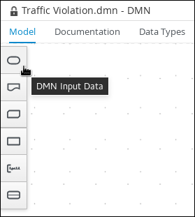
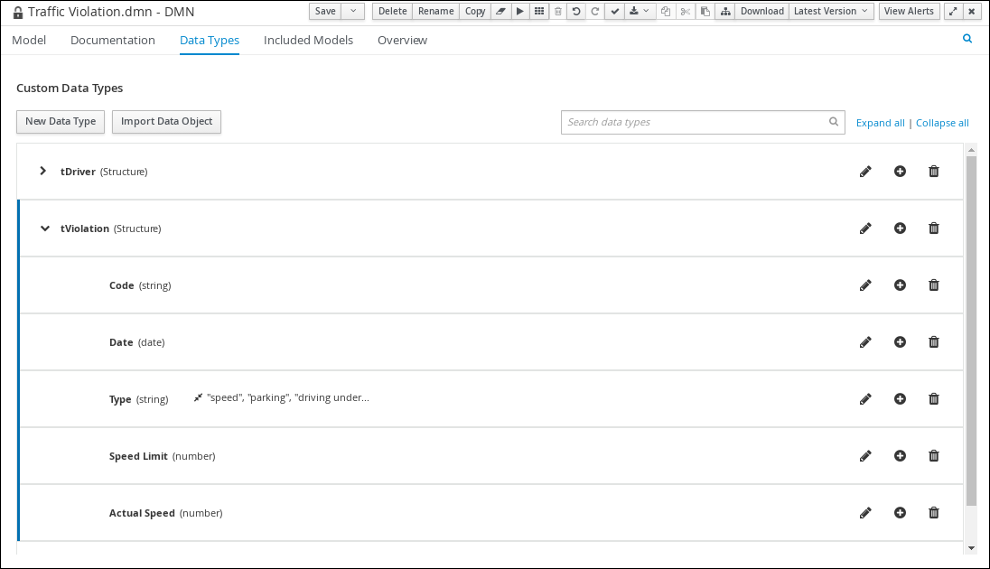
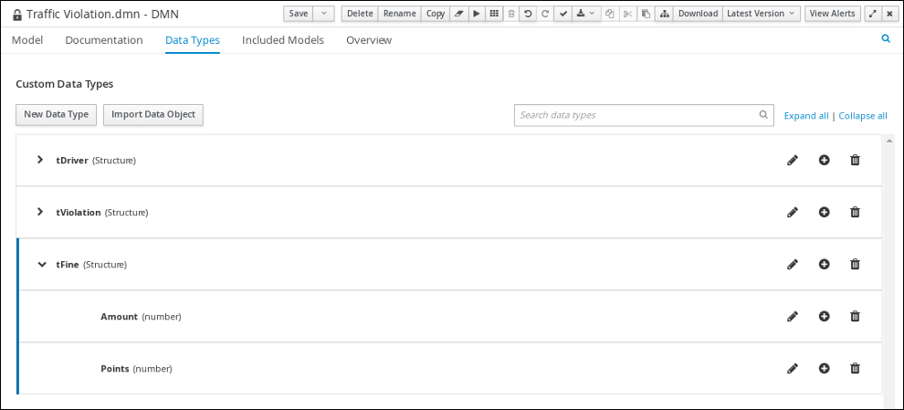
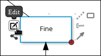

Getting started with Red Hat Decision Manager
Abstract
- Preface
- Making open source more inclusive
- I. Getting started with decision services in Red Hat Decision Manager
- 1. Sample projects and business assets in Business Central
- 2. Red Hat Decision Manager BPMN and DMN modelers
- 3. Creating and executing DMN and BPMN models using Maven
- 4. Creating the traffic violations project in Business Central
- 5. Decision Model and Notation (DMN)
- 6. Test scenarios
- 7. DMN model execution
- 8. Additional resources
- II. Getting started with Red Hat Business Optimizer
- 9. Introduction to Red Hat Business Optimizer
- 10. Getting started with solvers in Business Central: An employee rostering example
- 10.1. Deploying the employee rostering sample project in Business Central
- 10.2. Re-creating the employee rostering sample project
- 10.2.1. Setting up the employee rostering project
- 10.2.2. Problem facts and planning entities
- 10.2.3. Creating the data model for the employee rostering project
- 10.2.4. Employee rostering constraints
- 10.2.5. Creating rules for employee rostering using guided rules
- 10.2.6. Creating a solver configuration for employee rostering
- 10.2.7. Configuring Solver termination for the employee rostering project
- 10.3. Accessing the solver using the REST API
- 11. Getting started with Java solvers: A cloud balancing example
- 12. Examples provided with Red Hat Business Optimizer
- 12.1. Downloading and running the examples
- 12.2. Table of Business Optimizer examples
- 12.3. N queens
- 12.4. Cloud balancing
- 12.5. Traveling salesman (TSP - Traveling Salesman Problem)
- 12.6. Dinner party
- 12.7. Tennis club scheduling
- 12.8. Meeting scheduling
- 12.9. Course timetabling (ITC 2007 Track 3 - Curriculum Course Scheduling)
- 12.10. Machine reassignment (Google ROADEF 2012)
- 12.11. Vehicle routing
- 12.12. Project job scheduling
- 12.13. Task assigning
- 12.14. Exam timetabling (ITC 2007 track 1 - Examination)
- 12.15. Nurse rostering (INRC 2010)
- 12.16. Traveling tournament problem (TTP)
- 12.17. Cheap time scheduling
- 12.18. Investment asset class allocation (Portfolio Optimization)
- 12.19. Conference scheduling
- 12.20. Rock tour
- 12.21. Flight crew scheduling
- A. Versioning information
- B. Contact information
Preface
As a developer of business decisions , you can use Red Hat Decision Manager to develop decision services using a variety of available assets. You can also use Red Hat Business Optimizer to find the optimal solution to planning problems based on a set of limited resources and under specific constraints.
Making open source more inclusive
Red Hat is committed to replacing problematic language in our code, documentation, and web properties. We are beginning with these four terms: master, slave, blacklist, and whitelist. Because of the enormity of this endeavor, these changes will be implemented gradually over several upcoming releases. For more details, see our CTO Chris Wright’s message.
Part I. Getting started with decision services in Red Hat Decision Manager
As a business rules developer, you can use Business Central in Red Hat Decision Manager or the Red Hat Decision Manager DMN modeler in VSCode to design a variety of decision services. Red Hat Decision Manager provides example projects with example business assets directly in Business Central as a reference. This document describes how to create and test an example traffic violation project based on the Traffic_Violation sample project included in Business Central. This sample project uses a Decision Model and Notation (DMN) model to define driver penalty and suspension rules in a traffic violation decision service. You can follow the steps in this document to create the project and the assets it contains, or open and review the existing Traffic_Violation sample project.
For more information about the DMN components and implementation in Red Hat Decision Manager, see Designing a decision service using DMN models.
Prerequisites
- Red Hat JBoss Enterprise Application Platform 7.3 is installed. For installation information, see Red Hat JBoss Enterprise Application Platform 7.3 Installation Guide.
- Red Hat Decision Manager is installed and configured with KIE Server. For more information see Installing and configuring Red Hat Decision Manager on Red Hat JBoss EAP 7.3.
-
Red Hat Decision Manager is running and you can log in to Business Central with the
developerrole. For more information, see Planning a Red Hat Decision Manager installation.
Table of Contents
- 1. Sample projects and business assets in Business Central
- 2. Red Hat Decision Manager BPMN and DMN modelers
- 3. Creating and executing DMN and BPMN models using Maven
- 4. Creating the traffic violations project in Business Central
- 5. Decision Model and Notation (DMN)
- 6. Test scenarios
- 7. DMN model execution
- 8. Additional resources
Chapter 1. Sample projects and business assets in Business Central
Business Central contains sample projects with business assets that you can use as a reference for the rules or other assets that you create in your own Red Hat Decision Manager projects. Each sample project is designed differently to demonstrate decision management or business optimization assets and logic in Red Hat Decision Manager.
Red Hat does not provide support for the sample code included in the Red Hat Decision Manager distribution.
The following sample projects are available in Business Central:
- Course_Scheduling: (Business optimization) Course scheduling and curriculum decision process. Assigns lectures to rooms and determines a student’s curriculum based on factors, such as course conflicts and class room capacity.
- Dinner_Party: (Business optimization) Guest seating optimization using guided decision tables. Assigns guest seating based on each guest’s job type, political beliefs, and known relationships.
- Employee_Rostering: (Business optimization) Employee rostering optimization using decision and solver assets. Assigns employees to shifts based on skills.
- Evaluation_Process: (Process automation) Evaluation process using business process assets. Evaluates employees based on performance.
- IT_Orders: (Process automation and case management) Ordering case using business process and case management assets. Places an IT hardware order based on needs and approvals.
- Mortgages: (Decision management with rules) Loan approval process using rule-based decision assets. Determines loan eligibility based on applicant data and qualifications.
- Mortgage_Process: (Process automation) Loan approval process using business process and decision assets. Determines loan eligibility based on applicant data and qualifications.
- OptaCloud: (Business optimization) Resource allocation optimization using decision and solver assets. Assigns processes to computers with limited resources.
- Traffic_Violation: (Decision management with DMN) Traffic violation decision service using a Decision Model and Notation (DMN) model. Determines driver penalty and suspension based on traffic violations.
1.1. Accessing sample projects and business assets in Business Central
You can use the sample projects in Business Central to explore business assets as a reference for the rules or other assets that you create in your own Red Hat Decision Manager projects.
Prerequisites
- Business Central is installed and running. For installation options, see Planning a Red Hat Decision Manager installation.
Procedure
- In Business Central, go to Menu → Design → Projects. If there are existing projects, you can access the samples by clicking on the MySpace default space and selecting Try Samples from the Add Project drop-down menu. If there are no existing projects, click Try samples.
- Review the descriptions for each sample project to determine which project you want to explore. Each sample project is designed differently to demonstrate decision management or business optimization assets and logic in Red Hat Decision Manager.
- Select one or more sample projects and click Ok to add the projects to your space.
- In the Projects page of your space, select one of the sample projects to view the assets for that project.
Select each asset to explore how the project is designed to achieve the specified goal or workflow. Some of the sample projects contain more than one page of assets. Click the left or right arrows in the upper-right corner to view the full asset list.
Figure 1.1. Asset page selection
In the upper-right corner of the project Assets page, click Build to build the sample project or Deploy to build the project and then deploy it to KIE Server.
NoteYou can also select the Build & Install option to build the project and publish the KJAR file to the configured Maven repository without deploying to a KIE Server. In a development environment, you can click Deploy to deploy the built KJAR file to a KIE Server without stopping any running instances (if applicable), or click Redeploy to deploy the built KJAR file and replace all instances. The next time you deploy or redeploy the built KJAR, the previous deployment unit (KIE container) is automatically updated in the same target KIE Server. In a production environment, the Redeploy option is disabled and you can click Deploy only to deploy the built KJAR file to a new deployment unit (KIE container) on a KIE Server.
To configure the KIE Server environment mode, set the
org.kie.server.modesystem property toorg.kie.server.mode=developmentororg.kie.server.mode=production. To configure the deployment behavior for a corresponding project in Business Central, go to project Settings → General Settings → Version, toggle the Development Mode option, and click Save. By default, KIE Server and all new projects in Business Central are in development mode. You cannot deploy a project with Development Mode turned on or with a manually addedSNAPSHOTversion suffix to a KIE Server that is in production mode.To review project deployment details, click View deployment details in the deployment banner at the top of the screen or in the Deploy drop-down menu. This option directs you to the Menu → Deploy → Execution Servers page.
Chapter 2. Red Hat Decision Manager BPMN and DMN modelers
Red Hat Decision Manager provides the following extensions or applications that you can use to design Business Process Model and Notation (BPMN) process models and Decision Model and Notation (DMN) decision models using graphical modelers.
Business Central: Enables you to view and design BPMN models, DMN models, and test scenario files in a related embedded designer.
To use Business Central, you can set up a development environment containing a Business Central to design business rules and processes, and a KIE Server to execute and test the created business rules and processes.
Red Hat Decision Manager VSCode extension: Enables you to view and design BPMN models, DMN models, and test scenario files in Visual Studio Code (VSCode). The VSCode extension requires VSCode 1.46.0 or later.
To install the Red Hat Decision Manager VSCode extension, select the Extensions menu option in VSCode and search for and install the Red Hat Business Automation Bundle extension.
-
Standalone BPMN and DMN editors: Enable you to view and design BPMN and DMN models embedded in your web applications. To download the necessary files, you can either use the NPM artifacts from the NPM registry or download the JavaScript files directly for the DMN standalone editor library at
https://<YOUR_PAGE>/dmn/index.jsand for the BPMN standalone editor library athttps://<YOUR_PAGE>/bpmn/index.js.
2.1. Installing the Red Hat Decision Manager VSCode extension bundle
Red Hat Decision Manager provides a Red Hat Business Automation Bundle VSCode extension that enables you to design Decision Model and Notation (DMN) decision models, Business Process Model and Notation (BPMN) 2.0 business processes, and test scenarios directly in VSCode. VSCode is the preferred integrated development environment (IDE) for developing new business applications. Red Hat Decision Manager also provides individual DMN Editor and BPMN Editor VSCode extensions for DMN or BPMN support only, if needed.
The editors in the VSCode are partially compatible with the editors in the Business Central, and several Business Central features are not supported in the VSCode.
Prerequisites
- The latest stable version of VSCode is installed.
Procedure
In your VSCode IDE, select the Extensions menu option and search for Red Hat Business Automation Bundle for DMN, BPMN, and test scenario file support.
For DMN or BPMN file support only, you can also search for the individual DMN Editor or BPMN Editor extensions.
- When the Red Hat Business Automation Bundle extension appears in VSCode, select it and click Install.
- For optimal VSCode editor behavior, after the extension installation is complete, reload or close and re-launch your instance of VSCode.
After you install the VSCode extension bundle, any .dmn, .bpmn, or .bpmn2 files that you open or create in VSCode are automatically displayed as graphical models. Additionally, any .scesim files that you open or create are automatically displayed as tabular test scenario models for testing the functionality of your business decisions.
If the DMN, BPMN, or test scenario modelers open only the XML source of a DMN, BPMN, or test scenario file and displays an error message, review the reported errors and the model file to ensure that all elements are correctly defined.
For new DMN or BPMN models, you can also enter dmn.new or bpmn.new in a web browser to design your DMN or BPMN model in the online modeler. When you finish creating your model, you can click Download in the online modeler page to import your DMN or BPMN file into your Red Hat Decision Manager project in VSCode.
2.2. Configuring the Red Hat Decision Manager standalone editors
Red Hat Decision Manager provides standalone editors that are distributed in a self-contained library providing an all-in-one JavaScript file for each editor. The JavaScript file uses a comprehensive API to set and control the editor.
You can install the standalone editors in three ways:
- Download each JavaScript file manually
- Use the NPM package
Procedure
Install the standalone editors using one of the following methods:
Download each JavaScript file manually: For this method, follow these steps:
- Download the JavaScript files.
- Add the downloaded Javascript files to your hosted application.
Add the following
<script>tag to your HTML page:Script tag for your HTML page for the DMN editor
<script src="https://<YOUR_PAGE>/dmn/index.js"></script>
Script tag for your HTML page for the BPMN editor
<script src="https://<YOUR_PAGE>/bpmn/index.js"></script>
Use the NPM package: For this method, follow these steps:
Add the NPM package to your
package.jsonfile:Adding the NPM package
npm install @redhat/kogito-tooling-kie-editors-standalone
Import each editor library to your TypeScript file:
Importing each editor
import * as DmnEditor from "@redhat/kogito-tooling-kie-editors-standalone/dist/dmn" import * as BpmnEditor from "@redhat/kogito-tooling-kie-editors-standalone/dist/bpmn"
After you install the standalone editors, open the required editor by using the provided editor API, as shown in the following example for opening a DMN editor. The API is the same for each editor.
Opening the DMN standalone editor
const editor = DmnEditor.open({ container: document.getElementById("dmn-editor-container"), initialContent: Promise.resolve(""), readOnly: false, origin: "", resources: new Map([ [ "MyIncludedModel.dmn", { contentType: "text", content: Promise.resolve("") } ] ]) });Use the following parameters with the editor API:
Table 2.1. Example parameters
Parameter Description containerHTML element in which the editor is appended.
initialContentPromise to a DMN model content. This parameter can be empty, as shown in the following examples:
-
Promise.resolve("") -
Promise.resolve("<DIAGRAM_CONTENT_DIRECTLY_HERE>") -
fetch("MyDmnModel.dmn").then(content ⇒ content.text())
readOnly(Optional)Enables you to allow changes in the editor. Set to
false(default) to allow content editing andtruefor read-only mode in editor.NoteOnly the DMN editor supports read-only mode for now.
origin(Optional)Origin of the repository. The default value is
window.location.origin.resources(Optional)Map of resources for the editor. For example, this parameter is used to provide included models for the DMN editor or work item definitions for the BPMN editor. Each entry in the map contains a resource name and an object that consists of
content-type(textorbinary) andcontent(similar to theinitialContentparameter).The returned object contains the methods that are required to manipulate the editor.
Table 2.2. Returned object methods
Method Description getContent(): Promise<string>Returns a promise containing the editor content.
setContent(content: string): voidSets the content of the editor.
getPreview(): Promise<string>Returns a promise containing an SVG string of the current diagram.
subscribeToContentChanges(callback: (isDirty: boolean) ⇒ void): (isDirty: boolean) ⇒ voidSets a callback to be called when the content changes in the editor and returns the same callback to be used for unsubscription.
unsubscribeToContentChanges(callback: (isDirty: boolean) ⇒ void): voidUnsubscribes the passed callback when the content changes in the editor.
markAsSaved(): voidResets the editor state that indicates that the content in the editor is saved. Also, it activates the subscribed callbacks related to content change.
undo(): voidUndoes the last change in the editor. Also, it activates the subscribed callbacks related to content change.
redo(): voidRedoes the last undone change in the editor. Also, it activates the subscribed callbacks related to content change.
close(): voidCloses the editor.
getElementPosition(selector: string): Promise<Rect>Provides an alternative to extend the standard query selector when an element lives inside a canvas or a video component. The
selectorparameter must follow the<PROVIDER>:::<SELECT>format, such asCanvas:::MySquareorVideo:::PresenterHand. This method returns aRectrepresenting the element position.envelopeApi: MessageBusClientApi<KogitoEditorEnvelopeApi>This is an advanced editor API. For more information about advanced editor API, see MessageBusClientApi and KogitoEditorEnvelopeApi.
-
Chapter 3. Creating and executing DMN and BPMN models using Maven
You can use Maven archetypes to develop DMN and BPMN models in VSCode using the Red Hat Decision Manager VSCode extension instead of Business Central. You can then integrate your archetypes with your Red Hat Decision Manager decision and process services in Business Central as needed. This method of developing DMN and BPMN models is helpful for building new business applications using the Red Hat Decision Manager VSCode extension.
Procedure
- In a command terminal, navigate to a local folder where you want to store the new Red Hat Decision Manager project.
Enter the following command to generate a project within a defined folder using the following Maven archetype:
Generating a project using Maven archetype
mvn archetype:generate \ -DarchetypeGroupId=org.kie \ -DarchetypeArtifactId=kie-kjar-archetype \ -DarchetypeVersion=7.48.0.Final-redhat-00002This command generates a Maven project with required dependencies and generates required directories and files to build your business application. You can set up and use Git version-control system (recommended) when developing a project.
If you want to generate multiple projects in the same directory, you can specify the
artifactIdandgroupIdof the generated business application by adding-DgroupId=<groupid> -DartifactId=<artifactId>to the previous command.- In your VSCode IDE, click File, select Open Folder, and navigate to the folder that is generated using the previous command.
Before creating the first asset, set a package for your business application, for example,
org.kie.businessapp, and create respective directories in the following paths:-
PROJECT_HOME/src/main/java -
PROJECT_HOME/src/main/resources -
PROJECT_HOME/src/test/resources
For example, you can create
PROJECT_HOME/src/main/java/org/kie/businessappfororg.kie.businessapppackage.-
Use VSCode to create assets for your business application. You can create the assets supported by Red Hat Decision Manager VSCode extension using the following ways:
-
To create a business process, create a new file with
.bpmnor.bpmn2inPROJECT_HOME/src/main/java/org/kie/businessappdirectory, such asProcess.bpmn. -
To create a DMN model, create a new file with
.dmninPROJECT_HOME/src/main/java/org/kie/businessappdirectory, such asAgeDecision.dmn. -
To create a test scenario simulation model, create a new file with
.scesiminPROJECT_HOME/src/main/java/org/kie/businessappdirectory, such asTestAgeScenario.scesim.
-
To create a business process, create a new file with
After you create the assets in your Maven archetype, navigate to the root directory (contains
pom.xml) of the project in the command line and run the following command to build the knowledge JAR (KJAR) of your project:mvn clean install
If the build fails, address any problems described in the command line error messages and try again to validate the project until the build is successful. However, if the build is successful, you can find the artifact of your business application in
PROJECT_HOME/targetdirectory.NoteUse
mvn clean installcommand often to validate your project after each major change during development.
You can deploy the generated knowledge JAR (KJAR) of your business application on a running KIE Server using the REST API. For more information about using REST API, see Interacting with Red Hat Decision Manager using KIE APIs.
Chapter 4. Creating the traffic violations project in Business Central
For this example, create a new project called traffic-violation. A project is a container for assets such as data objects, DMN assets, and test scenarios. This example project that you are creating is similar to the existing Traffic_Violation sample project in Business Central.
Procedure
In Business Central, go to Menu → Design → Projects.
Red Hat Decision Manager provides a default space called MySpace, as shown in the following image. You can use the default space to create and test example projects.
Figure 4.1. Default space
- Click Add Project.
-
Enter
traffic-violationin the Name field. Click Add.
Figure 4.2. Add Project window

The Assets view of the project opens.
Chapter 5. Decision Model and Notation (DMN)
Decision Model and Notation (DMN) is a standard established by the Object Management Group (OMG) for describing and modeling operational decisions. DMN defines an XML schema that enables DMN models to be shared between DMN-compliant platforms and across organizations so that business analysts and business rules developers can collaborate in designing and implementing DMN decision services. The DMN standard is similar to and can be used together with the Business Process Model and Notation (BPMN) standard for designing and modeling business processes.
For more information about the background and applications of DMN, see the OMG Decision Model and Notation specification.
5.1. Creating the traffic violations DMN decision requirements diagram (DRD)
A decision requirements diagram (DRD) is a visual representation of your DMN model. Use the DMN designer in Business Central to design the DRD for the traffic violations project and to define the decision logic of the DRD components.
Figure 5.1. DRD for the Traffic Violations example

Prerequisites
- You have created the traffic violations project in Business Central.
Procedure
- On the traffic-violation project’s home page, click Add Asset.
On the Add Asset page, click DMN. The Create new DMN window is opened.
-
In the Create new DMN window, enter
Traffic Violationin the DMN name field. -
From the Package list, select
com.myspace.traffic_violation. - Click Ok. The DMN asset in the DMN designer is opened.
-
In the Create new DMN window, enter
In the DMN designer canvas, drag two DMN Input Data input nodes onto the canvas.
Figure 5.2. DMN Input Data nodes
-
In the upper-right corner, click the
 icon.
icon.
-
Double-click the input nodes and rename one to
Driverand the other toViolation. - Drag a DMN Decision decision node onto the canvas.
-
Double-click the decision node and rename it to
Fine. Click the Violation input node, select the Create DMN Information Requirement icon and click the
Finedecision node to link the two nodes.Figure 5.3. Create DMN Information Requirement icon
- Drag a DMN Decision decision node onto the canvas.
-
Double-click the decision node and rename it to
Should the driver be suspended?. - Click the Driver input node, select the Create DMN Information Requirement icon and click the Should the driver be suspended? decision node to link the two nodes.
- Click the Fine decision node, select the Create DMN Information Requirement icon, and select the Should the driver be suspended? decision node.
Click Save.
NoteAs you periodically save a DRD, the DMN designer performs a static validation of the DMN model and might produce error messages until the model is defined completely. After you finish defining the DMN model completely, if any errors remain, troubleshoot the specified problems accordingly.
5.2. Creating the traffic violations DMN custom data types
DMN data types determine the structure of the data that you use within a table, column, or field in a DMN boxed expression for defining decision logic. You can use default DMN data types (such as string, number, or boolean) or you can create custom data types to specify additional fields and constraints that you want to implement for the boxed expression values. Use the DMN designer’s Data Types tab in Business Central to define the custom data types for the traffic violations project.
Figure 5.4. The custom data types tab
The following tables list the tDriver, tViolation, and tFine custom data types that you will create for this project.
Table 5.1. tDriver custom data type
| Name | Type |
|---|---|
|
tDriver |
Structure |
|
Name |
string |
|
Age |
number |
|
State |
string |
|
City |
string |
|
Points |
number |
Table 5.2. tViolation custom data type
| Name | Type |
|---|---|
|
tViolation |
Structure |
|
Code |
string |
|
Date |
date |
|
Type |
string |
|
Speed Limit |
number |
|
Actual Speed |
number |
Table 5.3. tFine custom data type
| Name | Type |
|---|---|
|
tFine |
Structure |
|
Amount |
number |
|
Points |
number |
Prerequisites
- You created the traffic violations DMN decision requirements diagram (DRDs) in Business Central.
Procedure
-
To create the
tDrivercustom data type, click Add a custom Data Type on the Data Types tab, entertDriverin the Name field, and selectStructurefrom the Type list. Click the check mark to the right of the new data type to save your changes.
Figure 5.5. The tDriver custom data type

Add each of the following nested data types to the
tDriverstructured data type by clicking the plus sign next totDriverfor each new nested data type. Click the check mark to the right of each new data type to save your changes.-
Name(string) -
Age(number) -
State(string) -
City(string) -
Points(number)
-
-
To create the
tViolationcustom data type, click New Data Type, entertViolationin the Name field, and selectStructurefrom the Type list. Click the check mark to the right of the new data type to save your changes.
Figure 5.6. The tViolation custom data type
Add each of the following nested data types to the
tViolationstructured data type by clicking the plus sign next totViolationfor each new nested data type. Click the check mark to the right of each new data type to save your changes.-
Code(string) -
Date(date) -
Type(string) -
Speed Limit(number) -
Actual Speed(number)
-
To add the following constraints to the
Typenested data type, click the edit icon, click Add Constraints, and select Enumeration from the Select constraint type drop-down menu.-
speed -
parking -
driving under the influence
-
- Click OK, then click the check mark to the right of the Type data type to save your changes.
To create the
tFinecustom data type, click New Data Type, entertFinein the Name field, selectStructurefrom the Type list, and click Save.Figure 5.7. The tFine custom data type
Add each of the following nested data types to the
tFinestructured data type by clicking the plus sign next totFinefor each new nested data type. Click the check mark to the right of each new data type to save your changes.-
Amount(number) -
Points(number)
-
- Click Save.
5.3. Assigning custom data types to the DRD input and decision nodes
After you create the DMN custom data types, assign them to the appropriate DMN Input Data and DMN Decision nodes in the traffic violations DRD.
Prerequisites
- You have created the traffic violations DMN custom data types in Business Central.
Procedure
-
Click the Model tab on the DMN designer and click the Properties
icon in the upper-right corner of the DMN designer to expose the DRD properties.
-
In the DRD, select the Driver input data node and in the Properties panel, select
tDriverfrom the Data type drop-down menu. -
Select the Violation input data node and select
tViolationfrom the Data type drop-down menu. -
Select the Fine decision node and select
tFinefrom the Data type drop-down menu. Select the Should the driver be suspended? decision node and set the following properties:
-
Data type:
string -
Question:
Should the driver be suspended due to points on his driver license? -
Allowed Answers:
Yes,No
-
Data type:
- Click Save.
You have assigned the custom data types to your DRD’s input and decision nodes.
5.4. Defining the traffic violations DMN decision logic
To calculate the fine and to decide whether the driver is to be suspended or not, you can define the traffic violations DMN decision logic using a DMN decision table and context boxed expression.
Figure 5.8. Fine expression

Figure 5.9. Should the driver be suspended expression
Prerequisites
- You have assigned the DMN custom data types to the appropriate decision and input nodes in the traffic violations DRD in Business Central.
Procedure
To calculate the fine, in the DMN designer canvas, select the Fine decision node and click the Edit icon to open the DMN boxed expression designer.
Figure 5.10. Decision node edit icon
Click Select expression → Decision Table.
Figure 5.11. Select Decisiong Table logic type

- For the Violation.Date, Violation.Code, and Violation.Speed Limit columns, right-click and select Delete for each field.
-
Click the Violation.Actual Speed column header and enter the expression
Violation.Actual Speed - Violation.Speed Limitin the Expression field." Enter the following values in the first row of the decision table:
-
Violation.Type:
"speed" -
Violation.Actual Speed - Violation.Speed Limit:
[10..30) -
Amount:
500 Points:
3Right-click the first row and select
Insert belowto add another row.
-
Violation.Type:
Enter the following values in the second row of the decision table:
-
Violation.Type:
"speed" -
Violation.Actual Speed - Violation.Speed Limit:
>= 30 -
Amount:
1000 Points:
7Right-click the second row and select
Insert belowto add another row.
-
Violation.Type:
Enter the following values in the third row of the decision table:
-
Violation.Type:
"parking" -
Violation.Actual Speed - Violation.Speed Limit:
- -
Amount:
100 Points:
1Right-click the third row and select
Insert belowto add another row.
-
Violation.Type:
Enter the following values in the fourth row of the decision table:
-
Violation.Type:
"driving under the influence" -
Violation.Actual Speed - Violation.Speed Limit:
- -
Amount:
1000 -
Points:
5
-
Violation.Type:
- Click Save.
- To define the driver suspension rule, return to the DMN designer canvas, select the Should the driver be suspended? decision node, and click the Edit icon to open the DMN boxed expression designer.
- Click Select expression → Context.
-
Click ContextEntry-1, enter
Total Pointsas the Name, and selectnumberfrom the Data Type drop-down menu. -
Click the cell next to Total Points, select
Literal expressionfrom the context menu, and enterDriver.Points + Fine.Pointsas the expression. -
In the cell below Driver.Points + Fine.Points, select
Literal Expressionfrom the context menu, and enterif Total Points >= 20 then "Yes" else "No". Click Save.
You have defined how to calculate the fine and the context for deciding when to suspend the driver. You can navigate to the traffic-violation project page and click Build to build the example project and address any errors noted in the Alerts panel.
Chapter 6. Test scenarios
Test scenarios in Red Hat Decision Manager enable you to validate the functionality of business rules and business rule data (for rules-based test scenarios) or of DMN models (for DMN-based test scenarios) before deploying them into a production environment. With a test scenario, you use data from your project to set given conditions and expected results based on one or more defined business rules. When you run the scenario, the expected results and actual results of the rule instance are compared. If the expected results match the actual results, the test is successful. If the expected results do not match the actual results, then the test fails.
Red Hat Decision Manager currently supports both the new Test Scenarios designer and the former Test Scenarios (Legacy) designer. The default designer is the new test scenarios designer, which supports testing of both rules and DMN models and provides an enhanced overall user experience with test scenarios. If required, you can continue to use the legacy test scenarios designer, which supports rule-based test scenarios only.
You can run the defined test scenarios in a number of ways, for example, you can run available test scenarios at the project level or inside a specific test scenario asset. Test scenarios are independent and cannot affect or modify other test scenarios. You can run test scenarios at any time during project development in Business Central. You do not have to compile or deploy your decision service to run test scenarios.
You can import data objects from different packages to the same project package as the test scenario. Assets in the same package are imported by default. After you create the necessary data objects and the test scenario, you can use the Data Objects tab of the test scenarios designer to verify that all required data objects are listed or to import other existing data objects by adding a New item.
Throughout the test scenarios documentation, all references to test scenarios and the test scenarios designer are for the new version, unless explicitly noted as the legacy version.
6.1. Testing the traffic violations using test scenarios
Use the test scenarios designer in Business Central to test the DMN decision requirements diagrams (DRDs) and define decision logic for the traffic violations project.
Figure 6.1. Test scenario for the traffic violations example
Prerequisites
- You have successfully built the traffic violations project in Business Central.
Procedure
- On the traffic-violation project’s home screen, click Add Asset to open the Add Asset screen.
Click Test Scenario to open the Create new Test Scenario dialog.
-
Enter
Violation Scenariosin the Test Scenario field. -
From the Package list, select
com.myspace.traffic_violation. -
Select
DMNas the Source type. - Click the Choose DMN asset text field and select the path to the DMN asset.
- Click Ok to open the Violation Scenarios test scenario in the Test Scenarios designer.
-
Enter
- Under Driver column sub-header, right-click the State, City, Age, and Name value cells and select Delete column from the context menu options to remove them.
- Under Violation column sub-header, right-click the Date and Code value cells and select Delete column to remove them.
Enter the following information in the first row of the test scenarios:
-
Scenario description:
Above speed limit: 10km/h and 30 km/h -
Points (under Given column header):
10 -
Type:
"speed" -
Speed Limit:
100 -
Actual Speed:
120 -
Points:
3 -
Amount:
500 Should the driver be suspended?:
"No"Right-click the first row and select Insert row below to add another row.
-
Scenario description:
Enter the following information in the second row of the test scenarios:
-
Scenario description:
Above speed limit: more than 30 km/h -
Points (under Given column header):
10 -
Type:
"speed" -
Speed Limit:
100 -
Actual Speed:
150 -
Points:
7 -
Amount:
1000 Should the driver be suspended?:
"No"Right-click the second row and select Insert row below to add another row.
-
Scenario description:
Enter the following information in the third row of the test scenarios:
-
Scenario description:
Parking violation -
Points (under Given column header):
10 -
Type:
"parking" - Speed Limit: leave blank
- Actual Speed: leave blank
-
Points:
1 -
Amount:
100 Should the driver be suspended?:
"No"Right-click the third row and select Insert row below to add another row.
-
Scenario description:
Enter the following information in the fourth row of the test scenarios:
-
Scenario description:
DUI violation -
Points (under Given column header):
10 -
Type:
"driving under the influence" - Speed Limit: leave blank
- Actual Speed: leave blank
-
Points:
5 -
Amount:
1000 Should the driver be suspended?:
"No"Right-click the fourth row and select Insert row below to add another row.
-
Scenario description:
Enter the following information in the fifth row of the test scenarios:
-
Scenario description:
Driver suspended -
Points (under Given column header):
15 -
Type:
"speed" -
Speed Limit:
100 -
Actual Speed:
140 -
Points:
7 -
Amount:
1000 -
Should the driver be suspended?:
"Yes"
-
Scenario description:
- Click Save.
Click the Play icon
 to check whether the test scenarios pass or fail.
to check whether the test scenarios pass or fail.
Figure 6.2. Test scenario execution result for the traffic violations example

In case of failure, correct the errors and run the test scenarios again.
Chapter 7. DMN model execution
You can create or import DMN files in your Red Hat Decision Manager project using Business Central or package the DMN files as part of your project knowledge JAR (KJAR) file without Business Central. After you implement your DMN files in your Red Hat Decision Manager project, you can execute the DMN decision service by deploying the KIE container that contains it to KIE Server for remote access and interacting with the container using the KIE Server REST API.
For information about including external DMN assets with your project packaging and deployment method, see Packaging and deploying a Red Hat Decision Manager project.
7.1. Executing a DMN service using the KIE Server REST API
Directly interacting with the REST endpoints of KIE Server provides the most separation between the calling code and the decision logic definition. The calling code is completely free of direct dependencies, and you can implement it in an entirely different development platform such as Node.js or .NET. The examples in this section demonstrate Nix-style curl commands but provide relevant information to adapt to any REST client.
For more information about the KIE Server REST API, see Interacting with Red Hat Decision Manager using KIE APIs.
Prerequisites
-
KIE Server is installed and configured, including a known user name and credentials for a user with the
kie-serverrole. For installation options, see Planning a Red Hat Decision Manager installation. You have built the DMN project as a KJAR artifact and deployed it to KIE Server. Ideally, you have built the DMN project as an executable model for more efficient execution:
mvn clean install -DgenerateDMNModel=yes
For more information about project packaging and deployment and executable models, see Packaging and deploying a Red Hat Decision Manager project.
- You have the ID of the KIE container containing the DMN model. If more than one model is present, you must also know the model namespace and model name of the relevant model.
Procedure
Determine the base URL for accessing the KIE Server REST API endpoints. This requires knowing the following values (with the default local deployment values as an example):
-
Host (
localhost) -
Port (
8080) -
Root context (
kie-server) -
Base REST path (
services/rest/)
Example base URL in local deployment for the traffic violations project:
http://localhost:8080/kie-server/services/rest/server/containers/traffic-violation_1.0.0-SNAPSHOT-
Host (
Determine user authentication requirements.
When users are defined directly in the KIE Server configuration, HTTP Basic authentication is used and requires the user name and password. Successful requests require that the user have the
kie-serverrole.The following example demonstrates how to add credentials to a curl request:
curl -u username:password <request>
If KIE Server is configured with Red Hat Single Sign-On, the request must include a bearer token:
curl -H "Authorization: bearer $TOKEN" <request>
Specify the format of the request and response. The REST API endpoints work with both JSON and XML formats and are set using request headers:
JSON
curl -H "accept: application/json" -H "content-type: application/json"
XML
curl -H "accept: application/xml" -H "content-type: application/xml"
Optional: Query the container for a list of deployed decision models:
[GET]
server/containers/{containerId}/dmnExample curl request:
curl -u wbadmin:wbadmin -H "accept: application/xml" -X GET "http://localhost:8080/kie-server/services/rest/server/containers/traffic-violation_1.0.0-SNAPSHOT/dmn"
Sample XML output:
<?xml version="1.0" encoding="UTF-8" standalone="yes"?> <response type="SUCCESS" msg="Ok models successfully retrieved from container 'traffic-violation_1.0.0-SNAPSHOT'"> <dmn-model-info-list> <model> <model-namespace>https://github.com/kiegroup/drools/kie-dmn/_60b01f4d-e407-43f7-848e-258723b5fac8</model-namespace> <model-name>Traffic Violation</model-name> <model-id>_2CD7D1AA-BD84-4B43-AD21-B0342ADE655A</model-id> <decisions> <dmn-decision-info> <decision-id>_23428EE8-DC8B-4067-8E67-9D7C53EC975F</decision-id> <decision-name>Fine</decision-name> </dmn-decision-info> <dmn-decision-info> <decision-id>_B5EEE2B1-915C-44DC-BE43-C244DC066FD8</decision-id> <decision-name>Should the driver be suspended?</decision-name> </dmn-decision-info> </decisions> <inputs> <dmn-inputdata-info> <inputdata-id>_CEB959CD-3638-4A87-93BA-03CD0FB63AE3</inputdata-id> <inputdata-name>Violation</inputdata-name> <inputdata-typeref> <namespace-uri>https://github.com/kiegroup/drools/kie-dmn/_60B01F4D-E407-43F7-848E-258723B5FAC8</namespace-uri> <local-part>tViolation</local-part> <prefix></prefix> </inputdata-typeref> </dmn-inputdata-info> <dmn-inputdata-info> <inputdata-id>_B0E810E6-7596-430A-B5CF-67CE16863B6C</inputdata-id> <inputdata-name>Driver</inputdata-name> <inputdata-typeref> <namespace-uri>https://github.com/kiegroup/drools/kie-dmn/_60B01F4D-E407-43F7-848E-258723B5FAC8</namespace-uri> <local-part>tDriver</local-part> <prefix></prefix> </inputdata-typeref> </dmn-inputdata-info> </inputs> <itemdefinitions> <dmn-itemdefinition-info> <itemdefinition-id>_9C758F4A-7D72-4D0F-B63F-2F5B8405980E</itemdefinition-id> <itemdefinition-name>tViolation</itemdefinition-name> <itemdefinition-itemcomponent> <dmn-itemdefinition-info> <itemdefinition-id>_0B6FF1E2-ACE9-4FB3-876B-5BB30B88009B</itemdefinition-id> <itemdefinition-name>Code</itemdefinition-name> <itemdefinition-typeref> <namespace-uri>https://github.com/kiegroup/drools/kie-dmn/_60b01f4d-e407-43f7-848e-258723b5fac8</namespace-uri> <local-part>string</local-part> <prefix></prefix> </itemdefinition-typeref> <itemdefinition-itemcomponent/> <itemdefinition-iscollection>false</itemdefinition-iscollection> </dmn-itemdefinition-info> <dmn-itemdefinition-info> <itemdefinition-id>_27A5DA18-3CA7-4C06-81B7-CF7F2F050E29</itemdefinition-id> <itemdefinition-name>date</itemdefinition-name> <itemdefinition-typeref> <namespace-uri>https://github.com/kiegroup/drools/kie-dmn/_60B01F4D-E407-43F7-848E-258723B5FAC8</namespace-uri> <local-part>date</local-part> <prefix></prefix> </itemdefinition-typeref> <itemdefinition-itemcomponent/> <itemdefinition-iscollection>false</itemdefinition-iscollection> </dmn-itemdefinition-info> <dmn-itemdefinition-info> <itemdefinition-id>_8961969A-8A80-4F12-B568-346920C0F038</itemdefinition-id> <itemdefinition-name>type</itemdefinition-name> <itemdefinition-typeref> <namespace-uri>https://github.com/kiegroup/drools/kie-dmn/_60B01F4D-E407-43F7-848E-258723B5FAC8</namespace-uri> <local-part>string</local-part> <prefix></prefix> </itemdefinition-typeref> <itemdefinition-itemcomponent/> <itemdefinition-iscollection>false</itemdefinition-iscollection> </dmn-itemdefinition-info> <dmn-itemdefinition-info> <itemdefinition-id>_7450F12A-3E95-4D5E-8DCE-2CB1FAC2BDD4</itemdefinition-id> <itemdefinition-name>speed limit</itemdefinition-name> <itemdefinition-typeref> <namespace-uri>https://github.com/kiegroup/drools/kie-dmn/_60b01f4d-e407-43f7-848e-258723b5fac8</namespace-uri> <local-part>number</local-part> <prefix></prefix> </itemdefinition-typeref> <itemdefinition-itemcomponent/> <itemdefinition-iscollection>false</itemdefinition-iscollection> </dmn-itemdefinition-info> <dmn-itemdefinition-info> <itemdefinition-id>_0A9A6F26-6C14-414D-A9BF-765E5850429A</itemdefinition-id> <itemdefinition-name>Actual Speed</itemdefinition-name> <itemdefinition-typeref> <namespace-uri>https://github.com/kiegroup/drools/kie-dmn/_60B01F4D-E407-43F7-848E-258723B5FAC8</namespace-uri> <local-part>number</local-part> <prefix></prefix> </itemdefinition-typeref> <itemdefinition-itemcomponent/> <itemdefinition-iscollection>false</itemdefinition-iscollection> </dmn-itemdefinition-info> </itemdefinition-itemcomponent> <itemdefinition-iscollection>false</itemdefinition-iscollection> </dmn-itemdefinition-info> <dmn-itemdefinition-info> <itemdefinition-id>_13C7EFD8-B85C-43BF-94D3-14FABE39A4A0</itemdefinition-id> <itemdefinition-name>tDriver</itemdefinition-name> <itemdefinition-itemcomponent> <dmn-itemdefinition-info> <itemdefinition-id>_EC11744C-4160-4549-9610-2C757F40DFE8</itemdefinition-id> <itemdefinition-name>Name</itemdefinition-name> <itemdefinition-typeref> <namespace-uri>https://github.com/kiegroup/drools/kie-dmn/_60B01F4D-E407-43F7-848E-258723B5FAC8</namespace-uri> <local-part>string</local-part> <prefix></prefix> </itemdefinition-typeref> <itemdefinition-itemcomponent/> <itemdefinition-iscollection>false</itemdefinition-iscollection> </dmn-itemdefinition-info> <dmn-itemdefinition-info> <itemdefinition-id>_E95BE3DB-4A51-4658-A166-02493EAAC9D2</itemdefinition-id> <itemdefinition-name>Age</itemdefinition-name> <itemdefinition-typeref> <namespace-uri>https://github.com/kiegroup/drools/kie-dmn/_60B01F4D-E407-43F7-848E-258723B5FAC8</namespace-uri> <local-part>number</local-part> <prefix></prefix> </itemdefinition-typeref> <itemdefinition-itemcomponent/> <itemdefinition-iscollection>false</itemdefinition-iscollection> </dmn-itemdefinition-info> <dmn-itemdefinition-info> <itemdefinition-id>_7B3023E2-BC44-4BF3-BF7E-773C240FB9AD</itemdefinition-id> <itemdefinition-name>State</itemdefinition-name> <itemdefinition-typeref> <namespace-uri>https://github.com/kiegroup/drools/kie-dmn/_60B01F4D-E407-43F7-848E-258723B5FAC8</namespace-uri> <local-part>string</local-part> <prefix></prefix> </itemdefinition-typeref> <itemdefinition-itemcomponent/> <itemdefinition-iscollection>false</itemdefinition-iscollection> </dmn-itemdefinition-info> <dmn-itemdefinition-info> <itemdefinition-id>_3D4B49DD-700C-4925-99A7-3B2B873F7800</itemdefinition-id> <itemdefinition-name>city</itemdefinition-name> <itemdefinition-typeref> <namespace-uri>https://github.com/kiegroup/drools/kie-dmn/_60B01F4D-E407-43F7-848E-258723B5FAC8</namespace-uri> <local-part>string</local-part> <prefix></prefix> </itemdefinition-typeref> <itemdefinition-itemcomponent/> <itemdefinition-iscollection>false</itemdefinition-iscollection> </dmn-itemdefinition-info> <dmn-itemdefinition-info> <itemdefinition-id>_B37C49E8-B0D9-4B20-9DC6-D655BB1CA7B1</itemdefinition-id> <itemdefinition-name>Points</itemdefinition-name> <itemdefinition-typeref> <namespace-uri>https://github.com/kiegroup/drools/kie-dmn/_60B01F4D-E407-43F7-848E-258723B5FAC8</namespace-uri> <local-part>number</local-part> <prefix></prefix> </itemdefinition-typeref> <itemdefinition-itemcomponent/> <itemdefinition-iscollection>false</itemdefinition-iscollection> </dmn-itemdefinition-info> </itemdefinition-itemcomponent> <itemdefinition-iscollection>false</itemdefinition-iscollection> </dmn-itemdefinition-info> <dmn-itemdefinition-info> <itemdefinition-id>_A4077C7E-B57A-4DEE-9C65-7769636316F3</itemdefinition-id> <itemdefinition-name>tFine</itemdefinition-name> <itemdefinition-itemcomponent> <dmn-itemdefinition-info> <itemdefinition-id>_79B152A8-DE83-4001-B88B-52DFF0D73B2D</itemdefinition-id> <itemdefinition-name>Amount</itemdefinition-name> <itemdefinition-typeref> <namespace-uri>https://github.com/kiegroup/drools/kie-dmn/_60B01F4D-E407-43F7-848E-258723B5FAC8</namespace-uri> <local-part>number</local-part> <prefix></prefix> </itemdefinition-typeref> <itemdefinition-itemcomponent/> <itemdefinition-iscollection>false</itemdefinition-iscollection> </dmn-itemdefinition-info> <dmn-itemdefinition-info> <itemdefinition-id>_D7CB5F9C-9D55-48C2-83EE-D47045EC90D0</itemdefinition-id> <itemdefinition-name>Points</itemdefinition-name> <itemdefinition-typeref> <namespace-uri>https://github.com/kiegroup/drools/kie-dmn/_60B01F4D-E407-43F7-848E-258723B5FAC8</namespace-uri> <local-part>number</local-part> <prefix></prefix> </itemdefinition-typeref> <itemdefinition-itemcomponent/> <itemdefinition-iscollection>false</itemdefinition-iscollection> </dmn-itemdefinition-info> </itemdefinition-itemcomponent> <itemdefinition-iscollection>false</itemdefinition-iscollection> </dmn-itemdefinition-info> </itemdefinitions> <decisionservices/> </model> </dmn-model-info-list> </response>Sample JSON output:
{ "type" : "SUCCESS", "msg" : "OK models successfully retrieved from container 'Traffic-Violation_1.0.0-SNAPSHOT'", "result" : { "dmn-model-info-list" : { "models" : [ { "model-namespace" : "https://github.com/kiegroup/drools/kie-dmn/_60B01F4D-E407-43F7-848E-258723B5FAC8", "model-name" : "Traffic Violation", "model-id" : "_2CD7D1AA-BD84-4B43-AD21-B0342ADE655A", "decisions" : [ { "decision-id" : "_23428EE8-DC8B-4067-8E67-9D7C53EC975F", "decision-name" : "Fine" }, { "decision-id" : "_B5EEE2B1-915C-44DC-BE43-C244DC066FD8", "decision-name" : "Should the driver be suspended?" } ], "inputs" : [ { "inputdata-id" : "_CEB959CD-3638-4A87-93BA-03CD0FB63AE3", "inputdata-name" : "Violation", "inputdata-typeRef" : { "namespace-uri" : "https://github.com/kiegroup/drools/kie-dmn/_60B01F4D-E407-43F7-848E-258723B5FAC8", "local-part" : "tViolation", "prefix" : "" } }, { "inputdata-id" : "_B0E810E6-7596-430A-B5CF-67CE16863B6C", "inputdata-name" : "Driver", "inputdata-typeRef" : { "namespace-uri" : "https://github.com/kiegroup/drools/kie-dmn/_60B01F4D-E407-43F7-848E-258723B5FAC8", "local-part" : "tDriver", "prefix" : "" } } ], "itemDefinitions" : [ { "itemdefinition-id" : "_13C7EFD8-B85C-43BF-94D3-14FABE39A4A0", "itemdefinition-name" : "tDriver", "itemdefinition-typeRef" : null, "itemdefinition-itemComponent" : [ { "itemdefinition-id" : "_EC11744C-4160-4549-9610-2C757F40DFE8", "itemdefinition-name" : "Name", "itemdefinition-typeRef" : { "namespace-uri" : "https://github.com/kiegroup/drools/kie-dmn/_60B01F4D-E407-43F7-848E-258723B5FAC8", "local-part" : "string", "prefix" : "" }, "itemdefinition-itemComponent" : [ ], "itemdefinition-isCollection" : false }, { "itemdefinition-id" : "_E95BE3DB-4A51-4658-A166-02493EAAC9D2", "itemdefinition-name" : "Age", "itemdefinition-typeRef" : { "namespace-uri" : "https://github.com/kiegroup/drools/kie-dmn/_60B01F4D-E407-43F7-848E-258723B5FAC8", "local-part" : "number", "prefix" : "" }, "itemdefinition-itemComponent" : [ ], "itemdefinition-isCollection" : false }, { "itemdefinition-id" : "_7B3023E2-BC44-4BF3-BF7E-773C240FB9AD", "itemdefinition-name" : "State", "itemdefinition-typeRef" : { "namespace-uri" : "https://github.com/kiegroup/drools/kie-dmn/_60B01F4D-E407-43F7-848E-258723B5FAC8", "local-part" : "string", "prefix" : "" }, "itemdefinition-itemComponent" : [ ], "itemdefinition-isCollection" : false }, { "itemdefinition-id" : "_3D4B49DD-700C-4925-99A7-3B2B873F7800", "itemdefinition-name" : "City", "itemdefinition-typeRef" : { "namespace-uri" : "https://github.com/kiegroup/drools/kie-dmn/_60B01F4D-E407-43F7-848E-258723B5FAC8", "local-part" : "string", "prefix" : "" }, "itemdefinition-itemComponent" : [ ], "itemdefinition-isCollection" : false }, { "itemdefinition-id" : "_B37C49E8-B0D9-4B20-9DC6-D655BB1CA7B1", "itemdefinition-name" : "Points", "itemdefinition-typeRef" : { "namespace-uri" : "https://github.com/kiegroup/drools/kie-dmn/_60B01F4D-E407-43F7-848E-258723B5FAC8", "local-part" : "number", "prefix" : "" }, "itemdefinition-itemComponent" : [ ], "itemdefinition-isCollection" : false } ], "itemdefinition-isCollection" : false }, { "itemdefinition-id" : "_A4077C7E-B57A-4DEE-9C65-7769636316F3", "itemdefinition-name" : "tFine", "itemdefinition-typeRef" : null, "itemdefinition-itemComponent" : [ { "itemdefinition-id" : "_79B152A8-DE83-4001-B88B-52DFF0D73B2D", "itemdefinition-name" : "Amount", "itemdefinition-typeRef" : { "namespace-uri" : "https://github.com/kiegroup/drools/kie-dmn/_60B01F4D-E407-43F7-848E-258723B5FAC8", "local-part" : "number", "prefix" : "" }, "itemdefinition-itemComponent" : [ ], "itemdefinition-isCollection" : false }, { "itemdefinition-id" : "_D7CB5F9C-9D55-48C2-83EE-D47045EC90D0", "itemdefinition-name" : "Points", "itemdefinition-typeRef" : { "namespace-uri" : "https://github.com/kiegroup/drools/kie-dmn/_60B01F4D-E407-43F7-848E-258723B5FAC8", "local-part" : "number", "prefix" : "" }, "itemdefinition-itemComponent" : [ ], "itemdefinition-isCollection" : false } ], "itemdefinition-isCollection" : false }, { "itemdefinition-id" : "_9C758F4A-7D72-4D0F-B63F-2F5B8405980E", "itemdefinition-name" : "tViolation", "itemdefinition-typeRef" : null, "itemdefinition-itemComponent" : [ { "itemdefinition-id" : "_0B6FF1E2-ACE9-4FB3-876B-5BB30B88009B", "itemdefinition-name" : "Code", "itemdefinition-typeRef" : { "namespace-uri" : "https://github.com/kiegroup/drools/kie-dmn/_60B01F4D-E407-43F7-848E-258723B5FAC8", "local-part" : "string", "prefix" : "" }, "itemdefinition-itemComponent" : [ ], "itemdefinition-isCollection" : false }, { "itemdefinition-id" : "_27A5DA18-3CA7-4C06-81B7-CF7F2F050E29", "itemdefinition-name" : "Date", "itemdefinition-typeRef" : { "namespace-uri" : "https://github.com/kiegroup/drools/kie-dmn/_60B01F4D-E407-43F7-848E-258723B5FAC8", "local-part" : "date", "prefix" : "" }, "itemdefinition-itemComponent" : [ ], "itemdefinition-isCollection" : false }, { "itemdefinition-id" : "_8961969A-8A80-4F12-B568-346920C0F038", "itemdefinition-name" : "Type", "itemdefinition-typeRef" : { "namespace-uri" : "https://github.com/kiegroup/drools/kie-dmn/_60B01F4D-E407-43F7-848E-258723B5FAC8", "local-part" : "string", "prefix" : "" }, "itemdefinition-itemComponent" : [ ], "itemdefinition-isCollection" : false }, { "itemdefinition-id" : "_7450F12A-3E95-4D5E-8DCE-2CB1FAC2BDD4", "itemdefinition-name" : "Speed Limit", "itemdefinition-typeRef" : { "namespace-uri" : "https://github.com/kiegroup/drools/kie-dmn/_60B01F4D-E407-43F7-848E-258723B5FAC8", "local-part" : "number", "prefix" : "" }, "itemdefinition-itemComponent" : [ ], "itemdefinition-isCollection" : false }, { "itemdefinition-id" : "_0A9A6F26-6C14-414D-A9BF-765E5850429A", "itemdefinition-name" : "Actual Speed", "itemdefinition-typeRef" : { "namespace-uri" : "https://github.com/kiegroup/drools/kie-dmn/_60B01F4D-E407-43F7-848E-258723B5FAC8", "local-part" : "number", "prefix" : "" }, "itemdefinition-itemComponent" : [ ], "itemdefinition-isCollection" : false } ], "itemdefinition-isCollection" : false } ], "decisionServices" : [ ] } ] } } }Execute the model:
[POST]
server/containers/{containerId}/dmnNoteThe attribute
model-namespaceis automatically generated and is different for every user. Ensure that themodel-namespaceandmodel-nameattributes that you use match those of the deployed model.Example curl request:
curl -u wbadmin:wbadmin -H "accept: application/json" -H "content-type: application/json" -X POST "http://localhost:8080/kie-server/services/rest/server/containers/traffic-violation_1.0.0-SNAPSHOT/dmn" -d "{ \"model-namespace\" : \"https://github.com/kiegroup/drools/kie-dmn/_60B01F4D-E407-43F7-848E-258723B5FAC8\", \"model-name\" : \"Traffic Violation\", \"dmn-context\" : {\"Driver\" : {\"Points\" : 15}, \"Violation\" : {\"Type\" : \"speed\", \"Actual Speed\" : 135, \"Speed Limit\" : 100}}}"Example JSON request:
{ "model-namespace" : "https://github.com/kiegroup/drools/kie-dmn/_60B01F4D-E407-43F7-848E-258723B5FAC8", "model-name" : "Traffic Violation", "dmn-context" : { "Driver" : { "Points" : 15 }, "Violation" : { "Type" : "speed", "Actual Speed" : 135, "Speed Limit" : 100 } } }Example XML request (JAXB format):
<?xml version="1.0" encoding="UTF-8" standalone="yes"?> <dmn-evaluation-context> <dmn-context xsi:type="jaxbListWrapper" xmlns:xsi="http://www.w3.org/2001/XMLSchema-instance"> <type>MAP</type> <element xsi:type="jaxbStringObjectPair" key="Violation"> <value xsi:type="jaxbListWrapper"> <type>MAP</type> <element xsi:type="jaxbStringObjectPair" key="Type"> <value xsi:type="xs:string" xmlns:xs="http://www.w3.org/2001/XMLSchema">speed</value> </element> <element xsi:type="jaxbStringObjectPair" key="Speed Limit"> <value xsi:type="xs:decimal" xmlns:xs="http://www.w3.org/2001/XMLSchema">100</value> </element> <element xsi:type="jaxbStringObjectPair" key="Actual Speed"> <value xsi:type="xs:decimal" xmlns:xs="http://www.w3.org/2001/XMLSchema">135</value> </element> </value> </element> <element xsi:type="jaxbStringObjectPair" key="Driver"> <value xsi:type="jaxbListWrapper"> <type>MAP</type> <element xsi:type="jaxbStringObjectPair" key="Points"> <value xsi:type="xs:decimal" xmlns:xs="http://www.w3.org/2001/XMLSchema">15</value> </element> </value> </element> </dmn-context> </dmn-evaluation-context>NoteRegardless of the request format, the request requires the following elements:
- Model namespace
- Model name
- Context object containing input values
Example JSON response:
{ "type": "SUCCESS", "msg": "OK from container 'Traffic-Violation_1.0.0-SNAPSHOT'", "result": { "dmn-evaluation-result": { "messages": [], "model-namespace": "https://github.com/kiegroup/drools/kie-dmn/_7D8116DE-ADF5-4560-A116-FE1A2EAFFF48", "model-name": "Traffic Violation", "decision-name": [], "dmn-context": { "Violation": { "Type": "speed", "Speed Limit": 100, "Actual Speed": 135 }, "Should Driver be Suspended?": "Yes", "Driver": { "Points": 15 }, "Fine": { "Points": 7, "Amount": 1000 } }, "decision-results": { "_E1AF5AC2-E259-455C-96E4-596E30D3BC86": { "messages": [], "decision-id": "_E1AF5AC2-E259-455C-96E4-596E30D3BC86", "decision-name": "Should the Driver be Suspended?", "result": "Yes", "status": "SUCCEEDED" }, "_D7F02CE0-AF50-4505-AB80-C7D6DE257920": { "messages": [], "decision-id": "_D7F02CE0-AF50-4505-AB80-C7D6DE257920", "decision-name": "Fine", "result": { "Points": 7, "Amount": 1000 }, "status": "SUCCEEDED" } } } } }Example XML (JAXB format) response:
<?xml version="1.0" encoding="UTF-8" standalone="yes"?> <response type="SUCCESS" msg="OK from container 'Traffic_1.0.0-SNAPSHOT'"> <dmn-evaluation-result> <model-namespace>https://github.com/kiegroup/drools/kie-dmn/_A4BCA8B8-CF08-433F-93B2-A2598F19ECFF</model-namespace> <model-name>Traffic Violation</model-name> <dmn-context xsi:type="jaxbListWrapper" xmlns:xsi="http://www.w3.org/2001/XMLSchema-instance"> <type>MAP</type> <element xsi:type="jaxbStringObjectPair" key="Violation"> <value xsi:type="jaxbListWrapper"> <type>MAP</type> <element xsi:type="jaxbStringObjectPair" key="Type"> <value xsi:type="xs:string" xmlns:xs="http://www.w3.org/2001/XMLSchema">speed</value> </element> <element xsi:type="jaxbStringObjectPair" key="Speed Limit"> <value xsi:type="xs:decimal" xmlns:xs="http://www.w3.org/2001/XMLSchema">100</value> </element> <element xsi:type="jaxbStringObjectPair" key="Actual Speed"> <value xsi:type="xs:decimal" xmlns:xs="http://www.w3.org/2001/XMLSchema">135</value> </element> </value> </element> <element xsi:type="jaxbStringObjectPair" key="Driver"> <value xsi:type="jaxbListWrapper"> <type>MAP</type> <element xsi:type="jaxbStringObjectPair" key="Points"> <value xsi:type="xs:decimal" xmlns:xs="http://www.w3.org/2001/XMLSchema">15</value> </element> </value> </element> <element xsi:type="jaxbStringObjectPair" key="Fine"> <value xsi:type="jaxbListWrapper"> <type>MAP</type> <element xsi:type="jaxbStringObjectPair" key="Points"> <value xsi:type="xs:decimal" xmlns:xs="http://www.w3.org/2001/XMLSchema">7</value> </element> <element xsi:type="jaxbStringObjectPair" key="Amount"> <value xsi:type="xs:decimal" xmlns:xs="http://www.w3.org/2001/XMLSchema">1000</value> </element> </value> </element> <element xsi:type="jaxbStringObjectPair" key="Should the driver be suspended?"> <value xsi:type="xs:string" xmlns:xs="http://www.w3.org/2001/XMLSchema">Yes</value> </element> </dmn-context> <messages/> <decisionResults> <entry> <key>_4055D956-1C47-479C-B3F4-BAEB61F1C929</key> <value> <decision-id>_4055D956-1C47-479C-B3F4-BAEB61F1C929</decision-id> <decision-name>Fine</decision-name> <result xsi:type="jaxbListWrapper" xmlns:xsi="http://www.w3.org/2001/XMLSchema-instance"> <type>MAP</type> <element xsi:type="jaxbStringObjectPair" key="Points"> <value xsi:type="xs:decimal" xmlns:xs="http://www.w3.org/2001/XMLSchema">7</value> </element> <element xsi:type="jaxbStringObjectPair" key="Amount"> <value xsi:type="xs:decimal" xmlns:xs="http://www.w3.org/2001/XMLSchema">1000</value> </element> </result> <messages/> <status>SUCCEEDED</status> </value> </entry> <entry> <key>_8A408366-D8E9-4626-ABF3-5F69AA01F880</key> <value> <decision-id>_8A408366-D8E9-4626-ABF3-5F69AA01F880</decision-id> <decision-name>Should the driver be suspended?</decision-name> <result xsi:type="xs:string" xmlns:xs="http://www.w3.org/2001/XMLSchema" xmlns:xsi="http://www.w3.org/2001/XMLSchema-instance">Yes</result> <messages/> <status>SUCCEEDED</status> </value> </entry> </decisionResults> </dmn-evaluation-result> </response>
Chapter 8. Additional resources
Part II. Getting started with Red Hat Business Optimizer
As a business rules developer, you can use the Red Hat Business Optimizer to find the optimal solution to planning problems based on a set of limited resources and under specific constraints.
Use this document to start developing solvers with Red Hat Business Optimizer.
Table of Contents
- 9. Introduction to Red Hat Business Optimizer
- 10. Getting started with solvers in Business Central: An employee rostering example
- 10.1. Deploying the employee rostering sample project in Business Central
- 10.2. Re-creating the employee rostering sample project
- 10.2.1. Setting up the employee rostering project
- 10.2.2. Problem facts and planning entities
- 10.2.3. Creating the data model for the employee rostering project
- 10.2.4. Employee rostering constraints
- 10.2.5. Creating rules for employee rostering using guided rules
- 10.2.6. Creating a solver configuration for employee rostering
- 10.2.7. Configuring Solver termination for the employee rostering project
- 10.3. Accessing the solver using the REST API
- 11. Getting started with Java solvers: A cloud balancing example
- 12. Examples provided with Red Hat Business Optimizer
- 12.1. Downloading and running the examples
- 12.2. Table of Business Optimizer examples
- 12.3. N queens
- 12.4. Cloud balancing
- 12.5. Traveling salesman (TSP - Traveling Salesman Problem)
- 12.6. Dinner party
- 12.7. Tennis club scheduling
- 12.8. Meeting scheduling
- 12.9. Course timetabling (ITC 2007 Track 3 - Curriculum Course Scheduling)
- 12.10. Machine reassignment (Google ROADEF 2012)
- 12.11. Vehicle routing
- 12.12. Project job scheduling
- 12.13. Task assigning
- 12.14. Exam timetabling (ITC 2007 track 1 - Examination)
- 12.15. Nurse rostering (INRC 2010)
- 12.16. Traveling tournament problem (TTP)
- 12.17. Cheap time scheduling
- 12.18. Investment asset class allocation (Portfolio Optimization)
- 12.19. Conference scheduling
- 12.20. Rock tour
- 12.21. Flight crew scheduling
Chapter 9. Introduction to Red Hat Business Optimizer
Red Hat Business Optimizer is a lightweight, embeddable planning engine that optimizes planning problems. It helps normal Java programmers solve planning problems efficiently, and it combines optimization heuristics and metaheuristics with very efficient score calculations.
For example, Red Hat Business Optimizer helps solve various use cases:
- Employee/Patient Rosters: It helps create timetables for nurses and keeps track of patient bed management.
- Educational Timetables: It helps schedule lessons, courses, exams, and conference presentations.
- Shop Schedules: It tracks car assembly lines, machine queue planning, and workforce task planning.
- Cutting Stock: It minimizes waste by reducing the consumption of resources such as paper and steel.
Every organization faces planning problems; that is, they provide products and services with a limited set of constrained resources (employees, assets, time, and money).
Red Hat Business Optimizer is open source software under the Apache Software License 2.0. It is 100% pure Java and runs on most Java virtual machines.
9.1. Planning problems
A planning problem has an optimal goal, based on limited resources and under specific constraints. Optimal goals can be any number of things, such as:
- Maximized profits - the optimal goal results in the highest possible profit.
- Minimized ecological footprint - the optimal goal has the least amount of environmental impact.
- Maximized satisfaction for employees or customers - the optimal goal prioritizes the needs of employees or customers.
The ability to achieve these goals relies on the number of resources available. For example, the following resources might be limited:
- The number of people
- Amount of time
- Budget
- Physical assets, for example, machinery, vehicles, computers, buildings, and so on
You must also take into account the specific constraints related to these resources, such as the number of hours a person works, their ability to use certain machines, or compatibility between pieces of equipment.
Red Hat Business Optimizer helps Java programmers solve constraint satisfaction problems efficiently. It combines optimization heuristics and metaheuristics with efficient score calculation.
9.2. NP-completeness in planning problems
The provided use cases are probably NP-complete or NP-hard, which means the following statements apply:
- It is easy to verify a given solution to a problem in reasonable time.
- There is no simple way to find the optimal solution of a problem in reasonable time.
The implication is that solving your problem is probably harder than you anticipated, because the two common techniques do not suffice:
- A brute force algorithm (even a more advanced variant) takes too long.
- A quick algorithm, for example in the bin packing problem, putting in the largest items first returns a solution that is far from optimal.
By using advanced optimization algorithms, Business Optimizer finds a good solution in reasonable time for such planning problems.
9.3. Solutions to planning problems
A planning problem has a number of solutions.
Several categories of solutions are:
- Possible solution
- A possible solution is any solution, whether or not it breaks any number of constraints. Planning problems often have an incredibly large number of possible solutions. Many of those solutions are not useful.
- Feasible solution
- A feasible solution is a solution that does not break any (negative) hard constraints. The number of feasible solutions are relative to the number of possible solutions. Sometimes there are no feasible solutions. Every feasible solution is a possible solution.
- Optimal solution
- An optimal solution is a solution with the highest score. Planning problems usually have a few optimal solutions. They always have at least one optimal solution, even in the case that there are no feasible solutions and the optimal solution is not feasible.
- Best solution found
- The best solution is the solution with the highest score found by an implementation in a given amount of time. The best solution found is likely to be feasible and, given enough time, it’s an optimal solution.
Counterintuitively, the number of possible solutions is huge (if calculated correctly), even with a small data set.
In the examples provided in the planner-engine distribution folder, most instances have a large number of possible solutions. As there is no guaranteed way to find the optimal solution, any implementation is forced to evaluate at least a subset of all those possible solutions.
Business Optimizer supports several optimization algorithms to efficiently wade through that incredibly large number of possible solutions.
Depending on the use case, some optimization algorithms perform better than others, but it is impossible to know in advance. Using Business Optimizer, you can switch the optimization algorithm by changing the solver configuration in a few lines of XML or code.
9.4. Constraints on planning problems
Usually, a planning problem has minimum two levels of constraints:
A (negative) hard constraint must not be broken.
For example, one teacher can not teach two different lessons at the same time.
A (negative) soft constraint should not be broken if it can be avoided.
For example, Teacher A does not like to teach on Friday afternoons.
Some problems also have positive constraints:
A positive soft constraint (or reward) should be fulfilled if possible.
For example, Teacher B likes to teach on Monday mornings.
Some basic problems only have hard constraints. Some problems have three or more levels of constraints, for example, hard, medium, and soft constraints.
These constraints define the score calculation (otherwise known as the fitness function) of a planning problem. Each solution of a planning problem is graded with a score. With Business Optimizer, score constraints are written in an object oriented language such as Java, or in Drools rules.
This type of code is flexible and scalable.
Chapter 10. Getting started with solvers in Business Central: An employee rostering example
You can build and deploy the employee-rostering sample project in Business Central. The project demonstrates how to create each of the Business Central assets required to solve the shift rostering planning problem and use Red Hat Business Optimizer to find the best possible solution.
You can deploy the preconfigured employee-rostering project in Business Central. Alternatively, you can create the project yourself using Business Central.
The employee-rostering sample project in Business Central does not include a data set. You must supply a data set in XML format using a REST API call.
10.1. Deploying the employee rostering sample project in Business Central
Business Central includes a number of sample projects that you can use to get familiar with the product and its features. The employee rostering sample project is designed and created to demonstrate the shift rostering use case for Red Hat Business Optimizer. Use the following procedure to deploy and run the employee rostering sample in Business Central.
Prerequisites
- Red Hat Decision Manager has been downloaded and installed. For installation options, see Planning a Red Hat Decision Manager installation.
-
You have started the KIE Server and logged in to Business Central with a user that has
adminpermissions. For more information about getting started, see Getting started with decision services.
Procedure
- In Business Central, click Menu → Design → Projects.
-
In the preconfigured
MySpacespace, click Try Samples. - Select employee-rostering from the list of sample projects and click Ok in the upper-right corner to import the project.
- After the asset list has complied, click Build & Deploy to deploy the employee rostering example.
The rest of this document explains each of the project assets and their configuration.
10.2. Re-creating the employee rostering sample project
The employee rostering sample project is a preconfigured project available in Business Central. You can learn about how to deploy this project in Section 10.1, “Deploying the employee rostering sample project in Business Central”.
You can create the employee rostering example "from scratch". You can use the workflow in this example to create a similar project of your own in Business Central.
10.2.1. Setting up the employee rostering project
To start developing a solver in Business Central, you must set up the project.
Prerequisites
- Red Hat Decision Manager has been downloaded and installed.
-
You have deployed Business Central and logged in with a user that has the
adminrole.
Procedure
- Create a new project in Business Central by clicking Menu → Design → Projects → Add Project.
In the Add Project window, fill out the following fields:
-
Name:
employee-rostering - Description(optional): Employee rostering problem optimization using Business Optimizer. Assigns employees to shifts based on their skill.
Optionally, click Configure Advanced Options to populate the
Group ID,Artifact ID, andVersioninformation.-
Group ID:
employeerostering -
Artifact ID:
employeerostering -
Version:
1.0.0-SNAPSHOT
-
Name:
- Click Add to add the project to the Business Central project repository.
10.2.2. Problem facts and planning entities
Each of the domain classes in the employee rostering planning problem is categorized as one of the following:
- An unrelated class: not used by any of the score constraints. From a planning standpoint, this data is obsolete.
-
A problem fact class: used by the score constraints, but does not change during planning (as long as the problem stays the same), for example,
ShiftandEmployee. All the properties of a problem fact class are problem properties. A planning entity class: used by the score constraints and changes during planning, for example,
ShiftAssignment. The properties that change during planning are planning variables. The other properties are problem properties.Ask yourself the following questions:
- What class changes during planning?
Which class has variables that I want the
Solverto change?That class is a planning entity.
A planning entity class needs to be annotated with the
@PlanningEntityannotation, or defined in Business Central using the Red Hat Business Optimizer dock in the domain designer.Each planning entity class has one or more planning variables, and must also have one or more defining properties.
Most use cases have only one planning entity class, and only one planning variable per planning entity class.
10.2.3. Creating the data model for the employee rostering project
Use this section to create the data objects required to run the employee rostering sample project in Business Central.
Prerequisites
- You have completed the project setup described in Section 10.2.1, “Setting up the employee rostering project”.
Procedure
- With your new project, either click Data Object in the project perspective, or click Add Asset → Data Object to create a new data object.
Name the first data object
Timeslot, and selectemployeerostering.employeerosteringas the Package.Click Ok.
-
In the Data Objects perspective, click +add field to add fields to the
Timeslotdata object. -
In the id field, type
endTime. -
Click the drop-down menu next to Type and select
LocalDateTime. - Click Create and continue to add another field.
-
Add another field with the id
startTimeand TypeLocalDateTime. - Click Create.
-
Click Save in the upper-right corner to save the
Timeslotdata object. - Click the x in the upper-right corner to close the Data Objects perspective and return to the Assets menu.
Using the previous steps, create the following data objects and their attributes:
Table 10.1. Skill
id Type nameStringTable 10.2. Employee
id Type nameStringskillsemployeerostering.employeerostering.Skill[List]Table 10.3. Shift
id Type requiredSkillemployeerostering.employeerostering.Skilltimeslotemployeerostering.employeerostering.TimeslotTable 10.4. DayOffRequest
id Type dateLocalDateemployeeemployeerostering.employeerostering.EmployeeTable 10.5. ShiftAssignment
id Type employeeemployeerostering.employeerostering.Employeeshiftemployeerostering.employeerostering.Shift
For more examples of creating data objects, see Getting started with decision services.
10.2.3.1. Creating the employee roster planning entity
In order to solve the employee rostering planning problem, you must create a planning entity and a solver. The planning entity is defined in the domain designer using the attributes available in the Red Hat Business Optimizer dock.
Use the following procedure to define the ShiftAssignment data object as the planning entity for the employee rostering example.
Prerequisites
- You have created the relevant data objects and planning entity required to run the employee rostering example by completing the procedures in Section 10.2.3, “Creating the data model for the employee rostering project”.
Procedure
-
From the project Assets menu, open the
ShiftAssignmentdata object. -
In the Data Objects perspective, open the Red Hat Business Optimizer dock by clicking the
 on the right.
on the right.
- Select Planning Entity.
-
Select
employeefrom the list of fields under theShiftAssignmentdata object. In the Red Hat Business Optimizer dock, select Planning Variable.
In the Value Range Id input field, type
employeeRange. This adds the@ValueRangeProviderannotation to the planning entity, which you can view by clicking theSourcetab in the designer.The value range of a planning variable is defined with the
@ValueRangeProviderannotation. A@ValueRangeProviderannotation always has a propertyid, which is referenced by the@PlanningVariablepropertyvalueRangeProviderRefs.- Close the dock and click Save to save the data object.
10.2.3.2. Creating the employee roster planning solution
The employee roster problem relies on a defined planning solution. The planning solution is defined in the domain designer using the attributes available in the Red Hat Business Optimizer dock.
Prerequisites
- You have created the relevant data objects and planning entity required to run the employee rostering example by completing the procedures in Section 10.2.3, “Creating the data model for the employee rostering project” and Section 10.2.3.1, “Creating the employee roster planning entity”.
Procedure
-
Create a new data object with the identifier
EmployeeRoster. Create the following fields:
Table 10.6. EmployeeRoster
id Type dayOffRequestListemployeerostering.employeerostering.DayOffRequest[List]shiftAssignmentListemployeerostering.employeerostering.ShiftAssignment[List]shiftListemployeerostering.employeerostering.Shift[List]skillListemployeerostering.employeerostering.Skill[List]timeslotListemployeerostering.employeerostering.Timeslot[List]-
In the Data Objects perspective, open the Red Hat Business Optimizer dock by clicking the
on the right.
- Select Planning Solution.
-
Leave the default
Hard soft scoreas the Solution Score Type. This automatically generates ascorefield in theEmployeeRosterdata object with the solution score as the type. Add a new field with the following attributes:
id Type employeeListemployeerostering.employeerostering.Employee[List]With the
employeeListfield selected, open the Red Hat Business Optimizer dock and select the Planning Value Range Provider box.In the id field, type
employeeRange. Close the dock.- Click Save in the upper-right corner to save the asset.
10.2.4. Employee rostering constraints
Employee rostering is a planning problem. All planning problems include constraints that must be satisfied in order to find an optimal solution.
The employee rostering sample project in Business Central includes the following hard and soft constraints:
- Hard constraint
- Employees are only assigned one shift per day.
- All shifts that require a particular employee skill are assigned an employee with that particular skill.
- Soft constraints
- All employees are assigned a shift.
- If an employee requests a day off, their shift is reassigned to another employee.
Hard and soft constraints are defined in Business Central using either the free-form DRL designer, or using guided rules.
10.2.4.1. DRL (Drools Rule Language) rules
DRL (Drools Rule Language) rules are business rules that you define directly in .drl text files. These DRL files are the source in which all other rule assets in Business Central are ultimately rendered. You can create and manage DRL files within the Business Central interface, or create them externally as part of a Maven or Java project using Red Hat CodeReady Studio or another integrated development environment (IDE). A DRL file can contain one or more rules that define at a minimum the rule conditions (when) and actions (then). The DRL designer in Business Central provides syntax highlighting for Java, DRL, and XML.
DRL files consist of the following components:
Components in a DRL file
package
import
function // Optional
query // Optional
declare // Optional
global // Optional
rule "rule name"
// Attributes
when
// Conditions
then
// Actions
end
rule "rule2 name"
...
The following example DRL rule determines the age limit in a loan application decision service:
Example rule for loan application age limit
rule "Underage"
salience 15
agenda-group "applicationGroup"
when
$application : LoanApplication()
Applicant( age < 21 )
then
$application.setApproved( false );
$application.setExplanation( "Underage" );
end
A DRL file can contain single or multiple rules, queries, and functions, and can define resource declarations such as imports, globals, and attributes that are assigned and used by your rules and queries. The DRL package must be listed at the top of a DRL file and the rules are typically listed last. All other DRL components can follow any order.
Each rule must have a unique name within the rule package. If you use the same rule name more than once in any DRL file in the package, the rules fail to compile. Always enclose rule names with double quotation marks (rule "rule name") to prevent possible compilation errors, especially if you use spaces in rule names.
All data objects related to a DRL rule must be in the same project package as the DRL file in Business Central. Assets in the same package are imported by default. Existing assets in other packages can be imported with the DRL rule.
10.2.4.2. Defining constraints for employee rostering using the DRL designer
You can create constraint definitions for the employee rostering example using the free-form DRL designer in Business Central.
Use this procedure to create a hard constraint where no employee is assigned a shift that begins less than 10 hours after their previous shift ended.
Procedure
- In Business Central, go to Menu → Design → Projects and click the project name.
- Click Add Asset → DRL file.
-
In the DRL file name field, type
ComplexScoreRules. -
Select the
employeerostering.employeerosteringpackage. - Click +Ok to create the DRL file.
In the Model tab of the DRL designer, define the
Employee10HourShiftSpacerule as a DRL file:package employeerostering.employeerostering; rule "Employee10HourShiftSpace" when $shiftAssignment : ShiftAssignment( $employee : employee != null, $shiftEndDateTime : shift.timeslot.endTime) ShiftAssignment( this != $shiftAssignment, $employee == employee, $shiftEndDateTime <= shift.timeslot.endTime, $shiftEndDateTime.until(shift.timeslot.startTime, java.time.temporal.ChronoUnit.HOURS) <10) then scoreHolder.addHardConstraintMatch(kcontext, -1); end- Click Save to save the DRL file.
For more information about creating DRL files, see Designing a decision service using DRL rules.
10.2.5. Creating rules for employee rostering using guided rules
You can create rules that define hard and soft constraints for employee rostering using the guided rules designer in Business Central.
10.2.5.1. Guided rules
Guided rules are business rules that you create in a UI-based guided rules designer in Business Central that leads you through the rule-creation process. The guided rules designer provides fields and options for acceptable input based on the data objects for the rule being defined. The guided rules that you define are compiled into Drools Rule Language (DRL) rules as with all other rule assets.
All data objects related to a guided rule must be in the same project package as the guided rule. Assets in the same package are imported by default. After you create the necessary data objects and the guided rule, you can use the Data Objects tab of the guided rules designer to verify that all required data objects are listed or to import other existing data objects by adding a New item.
10.2.5.2. Creating a guided rule to balance employee shift numbers
The BalanceEmployeesShiftNumber guided rule creates a soft constraint that ensures shifts are assigned to employees in a way that is balanced as evenly as possible. It does this by creating a score penalty that increases when shift distribution is less even. The score formula, implemented by the rule, incentivizes the Solver to distribute shifts in a more balanced way.

Procedure
- In Business Central, go to Menu → Design → Projects and click the project name.
- Click Add Asset → Guided Rule.
-
Enter
BalanceEmployeesShiftNumberas the Guided Rule name and select theemployeerostering.employeerosteringPackage. - Click Ok to create the rule asset.
-
Add a WHEN condition by clicking the
 in the WHEN field.
in the WHEN field.
-
Select
Employeein the Add a condition to the rule window. Click +Ok. -
Click the
Employeecondition to modify the constraints and add the variable name$employee. Add the WHEN condition
From Accumulate.-
Above the
From Accumulatecondition, click click to add pattern and selectNumberas the fact type from the drop-down list. -
Add the variable name
$shiftCountto theNumbercondition. -
Below the
From Accumulatecondition, click click to add pattern and select theShiftAssignmentfact type from the drop-down list. -
Add the variable name
$shiftAssignmentto theShiftAssignmentfact type. -
Click the
ShiftAssignmentcondition again and from the Add a restriction on a field drop-down list, selectemployee. -
Select
equal tofrom the drop-down list next to theemployeeconstraint. -
Click the
 icon next to the drop-down button to add a variable, and click Bound variable in the Field value window.
icon next to the drop-down button to add a variable, and click Bound variable in the Field value window.
-
Select
$employeefrom the drop-down list. -
In the Function box type
count($shiftAssignment).
-
Above the
-
Add the THEN condition by clicking the
in the THEN field.
Select
Modify Soft Scorein the Add a new action window. Click +Ok.-
Type the following expression into the box:
-($shiftCount.intValue()*$shiftCount.intValue())
-
Type the following expression into the box:
- Click Validate in the upper-right corner to check all rule conditions are valid. If the rule validation fails, address any problems described in the error message, review all components in the rule, and try again to validate the rule until the rule passes.
- Click Save to save the rule.
For more information about creating guided rules, see Designing a decision service using guided rules.
10.2.5.3. Creating a guided rule for no more than one shift per day
The OneEmployeeShiftPerDay guided rule creates a hard constraint that employees are not assigned more than one shift per day. In the employee rostering example, this constraint is created using the guided rule designer.
Procedure
- In Business Central, go to Menu → Design → Projects and click the project name.
- Click Add Asset → Guided Rule.
-
Enter
OneEmployeeShiftPerDayas the Guided Rule name and select theemployeerostering.employeerosteringPackage. - Click Ok to create the rule asset.
-
Add a WHEN condition by clicking the
in the WHEN field.
- Select Free form DRL from the Add a condition to the rule window.
In the free form DRL box, type the following condition:
$shiftAssignment : ShiftAssignment( employee != null ) ShiftAssignment( this != $shiftAssignment , employee == $shiftAssignment.employee , shift.timeslot.startTime.toLocalDate() == $shiftAssignment.shift.timeslot.startTime.toLocalDate() )
This condition states that a shift cannot be assigned to an employee that already has another shift assignment on the same day.
-
Add the THEN condition by clicking the
in the THEN field.
- Select Add free form DRL from the Add a new action window.
In the free form DRL box, type the following condition:
scoreHolder.addHardConstraintMatch(kcontext, -1);
- Click Validate in the upper-right corner to check all rule conditions are valid. If the rule validation fails, address any problems described in the error message, review all components in the rule, and try again to validate the rule until the rule passes.
- Click Save to save the rule.
For more information about creating guided rules, see Designing a decision service using guided rules.
10.2.5.4. Creating a guided rule to match skills to shift requirements
The ShiftReqiredSkillsAreMet guided rule creates a hard constraint that ensures all shifts are assigned an employee with the correct set of skills. In the employee rostering example, this constraint is created using the guided rule designer.

Procedure
- In Business Central, go to Menu → Design → Projects and click the project name.
- Click Add Asset → Guided Rule.
-
Enter
ShiftReqiredSkillsAreMetas the Guided Rule name and select theemployeerostering.employeerosteringPackage. - Click Ok to create the rule asset.
-
Add a WHEN condition by clicking the
in the WHEN field.
-
Select
ShiftAssignmentin the Add a condition to the rule window. Click +Ok. -
Click the
ShiftAssignmentcondition, and selectemployeefrom the Add a restriction on a field drop-down list. -
In the designer, click the drop-down list next to
employeeand selectis not null. Click the
ShiftAssignmentcondition, and click Expression editor.-
In the designer, click
[not bound]to open the Expression editor, and bind the expression to the variable$requiredSkill. Click Set. -
In the designer, next to
$requiredSkill, selectshiftfrom the first drop-down list, thenrequiredSkillfrom the next drop-down list.
-
In the designer, click
Click the
ShiftAssignmentcondition, and click Expression editor.-
In the designer, next to
[not bound], selectemployeefrom the first drop-down list, thenskillsfrom the next drop-down list. -
Leave the next drop-down list as
Choose. -
In the next drop-down box, change
please choosetoexcludes. -
Click the
icon next to
excludes, and in the Field value window, click the New formula button. -
Type
$requiredSkillinto the formula box.
-
In the designer, next to
-
Add the THEN condition by clicking the
in the THEN field.
-
Select
Modify Hard Scorein the Add a new action window. Click +Ok. -
Type
-1into the score actions box. - Click Validate in the upper-right corner to check all rule conditions are valid. If the rule validation fails, address any problems described in the error message, review all components in the rule, and try again to validate the rule until the rule passes.
- Click Save to save the rule.
For more information about creating guided rules, see Designing a decision service using guided rules.
10.2.5.5. Creating a guided rule to manage day off requests
The DayOffRequest guided rule creates a soft constraint. This constraint allows a shift to be reassigned to another employee in the event the employee who was originally assigned the shift is no longer able to work that day. In the employee rostering example, this constraint is created using the guided rule designer.

Procedure
- In Business Central, go to Menu → Design → Projects and click the project name.
- Click Add Asset → Guided Rule.
-
Enter
DayOffRequestas the Guided Rule name and select theemployeerostering.employeerosteringPackage. - Click Ok to create the rule asset.
-
Add a WHEN condition by clicking the
in the WHEN field.
- Select Free form DRL from the Add a condition to the rule window.
In the free form DRL box, type the following condition:
$dayOffRequest : DayOffRequest( ) ShiftAssignment( employee == $dayOffRequest.employee , shift.timeslot.startTime.toLocalDate() == $dayOffRequest.date )
This condition states if a shift is assigned to an employee who has made a day off request, the employee can be unassigned the shift on that day.
-
Add the THEN condition by clicking the
in the THEN field.
- Select Add free form DRL from the Add a new action window.
In the free form DRL box, type the following condition:
scoreHolder.addSoftConstraintMatch(kcontext, -100);
- Click Validate in the upper-right corner to check all rule conditions are valid. If the rule validation fails, address any problems described in the error message, review all components in the rule, and try again to validate the rule until the rule passes.
- Click Save to save the rule.
For more information about creating guided rules, see Designing a decision service using guided rules.
10.2.6. Creating a solver configuration for employee rostering
You can create and edit Solver configurations in Business Central. The Solver configuration designer creates a solver configuration that can be run after the project is deployed.
Prerequisites
- Red Hat Decision Manager has been downloaded and installed.
- You have created and configured all of the relevant assets for the employee rostering example.
Procedure
- In Business Central, click Menu → Projects, and click your project to open it.
- In the Assets perspective, click Add Asset → Solver configuration
In the Create new Solver configuration window, type the name
EmployeeRosteringSolverConfigfor your Solver and click Ok.This opens the Solver configuration designer.
In the Score Director Factory configuration section, define a KIE base that contains scoring rule definitions. The employee rostering sample project uses
defaultKieBase.-
Select one of the KIE sessions defined within the KIE base. The employee rostering sample project uses
defaultKieSession.
-
Select one of the KIE sessions defined within the KIE base. The employee rostering sample project uses
- Click Validate in the upper-right corner to check the Score Director Factory configuration is correct. If validation fails, address any problems described in the error message, and try again to validate until the configuration passes.
- Click Save to save the Solver configuration.
10.2.7. Configuring Solver termination for the employee rostering project
You can configure the Solver to terminate after a specified amount of time. By default, the planning engine is given an unlimited time period to solve a problem instance.
The employee rostering sample project is set up to run for 30 seconds.
Prerequisites
-
You have created all relevant assets for the employee rostering project and created the
EmployeeRosteringSolverConfigsolver configuration in Business Central as described in Section 10.2.6, “Creating a solver configuration for employee rostering”.
Procedure
-
Open the
EmployeeRosteringSolverConfigfrom the Assets perspective. This will open the Solver configuration designer. - In the Termination section, click Add to create new termination element within the selected logical group.
-
Select the
Time spenttermination type from the drop-down list. This is added as an input field in the termination configuration. - Use the arrows next to the time elements to adjust the amount of time spent to 30 seconds.
- Click Validate in the upper-right corner to check the Score Director Factory configuration is correct. If validation fails, address any problems described in the error message, and try again to validate until the configuration passes.
- Click Save to save the Solver configuration.
10.3. Accessing the solver using the REST API
After deploying or re-creating the sample solver, you can access it using the REST API.
You must register a solver instance using the REST API. Then you can supply data sets and retrieve optimized solutions.
Prerequisites
- The employee rostering project is set up and deployed according to the previous sections in this document. You can either deploy the sample project, as described in Section 10.1, “Deploying the employee rostering sample project in Business Central”, or re-create the project, as described in Section 10.2, “Re-creating the employee rostering sample project”.
10.3.1. Registering the Solver using the REST API
You must register the solver instance using the REST API before you can use the solver.
Each solver instance is capable of optimizing one planning problem at a time.
Procedure
Create a HTTP request using the following header:
authorization: admin:admin X-KIE-ContentType: xstream content-type: application/xml
Register the Solver using the following request:
- PUT
-
http://localhost:8080/kie-server/services/rest/server/containers/employeerostering_1.0.0-SNAPSHOT/solvers/EmployeeRosteringSolver - Request body
<solver-instance> <solver-config-file>employeerostering/employeerostering/EmployeeRosteringSolverConfig.solver.xml</solver-config-file> </solver-instance>
10.3.2. Calling the Solver using the REST API
After registering the solver instance, you can use the REST API to submit a data set to the solver and to retrieve an optimized solution.
Procedure
Create a HTTP request using the following header:
authorization: admin:admin X-KIE-ContentType: xstream content-type: application/xml
Submit a request to the Solver with a data set, as in the following example:
- POST
-
http://localhost:8080/kie-server/services/rest/server/containers/employeerostering_1.0.0-SNAPSHOT/solvers/EmployeeRosteringSolver/state/solving - Request body
<employeerostering.employeerostering.EmployeeRoster> <employeeList> <employeerostering.employeerostering.Employee> <name>John</name> <skills> <employeerostering.employeerostering.Skill> <name>reading</name> </employeerostering.employeerostering.Skill> </skills> </employeerostering.employeerostering.Employee> <employeerostering.employeerostering.Employee> <name>Mary</name> <skills> <employeerostering.employeerostering.Skill> <name>writing</name> </employeerostering.employeerostering.Skill> </skills> </employeerostering.employeerostering.Employee> <employeerostering.employeerostering.Employee> <name>Petr</name> <skills> <employeerostering.employeerostering.Skill> <name>speaking</name> </employeerostering.employeerostering.Skill> </skills> </employeerostering.employeerostering.Employee> </employeeList> <shiftList> <employeerostering.employeerostering.Shift> <timeslot> <startTime>2017-01-01T00:00:00</startTime> <endTime>2017-01-01T01:00:00</endTime> </timeslot> <requiredSkill reference="../../../employeeList/employeerostering.employeerostering.Employee/skills/employeerostering.employeerostering.Skill"/> </employeerostering.employeerostering.Shift> <employeerostering.employeerostering.Shift> <timeslot reference="../../employeerostering.employeerostering.Shift/timeslot"/> <requiredSkill reference="../../../employeeList/employeerostering.employeerostering.Employee[3]/skills/employeerostering.employeerostering.Skill"/> </employeerostering.employeerostering.Shift> <employeerostering.employeerostering.Shift> <timeslot reference="../../employeerostering.employeerostering.Shift/timeslot"/> <requiredSkill reference="../../../employeeList/employeerostering.employeerostering.Employee[2]/skills/employeerostering.employeerostering.Skill"/> </employeerostering.employeerostering.Shift> </shiftList> <skillList> <employeerostering.employeerostering.Skill reference="../../employeeList/employeerostering.employeerostering.Employee/skills/employeerostering.employeerostering.Skill"/> <employeerostering.employeerostering.Skill reference="../../employeeList/employeerostering.employeerostering.Employee[3]/skills/employeerostering.employeerostering.Skill"/> <employeerostering.employeerostering.Skill reference="../../employeeList/employeerostering.employeerostering.Employee[2]/skills/employeerostering.employeerostering.Skill"/> </skillList> <timeslotList> <employeerostering.employeerostering.Timeslot reference="../../shiftList/employeerostering.employeerostering.Shift/timeslot"/> </timeslotList> <dayOffRequestList/> <shiftAssignmentList> <employeerostering.employeerostering.ShiftAssignment> <shift reference="../../../shiftList/employeerostering.employeerostering.Shift"/> </employeerostering.employeerostering.ShiftAssignment> <employeerostering.employeerostering.ShiftAssignment> <shift reference="../../../shiftList/employeerostering.employeerostering.Shift[3]"/> </employeerostering.employeerostering.ShiftAssignment> <employeerostering.employeerostering.ShiftAssignment> <shift reference="../../../shiftList/employeerostering.employeerostering.Shift[2]"/> </employeerostering.employeerostering.ShiftAssignment> </shiftAssignmentList> </employeerostering.employeerostering.EmployeeRoster>
Request the best solution to the planning problem:
- GET
http://localhost:8080/kie-server/services/rest/server/containers/employeerostering_1.0.0-SNAPSHOT/solvers/EmployeeRosteringSolver/bestsolutionExample response
<solver-instance> <container-id>employee-rostering</container-id> <solver-id>solver1</solver-id> <solver-config-file>employeerostering/employeerostering/EmployeeRosteringSolverConfig.solver.xml</solver-config-file> <status>NOT_SOLVING</status> <score scoreClass="org.optaplanner.core.api.score.buildin.hardsoft.HardSoftScore">0hard/0soft</score> <best-solution class="employeerostering.employeerostering.EmployeeRoster"> <employeeList> <employeerostering.employeerostering.Employee> <name>John</name> <skills> <employeerostering.employeerostering.Skill> <name>reading</name> </employeerostering.employeerostering.Skill> </skills> </employeerostering.employeerostering.Employee> <employeerostering.employeerostering.Employee> <name>Mary</name> <skills> <employeerostering.employeerostering.Skill> <name>writing</name> </employeerostering.employeerostering.Skill> </skills> </employeerostering.employeerostering.Employee> <employeerostering.employeerostering.Employee> <name>Petr</name> <skills> <employeerostering.employeerostering.Skill> <name>speaking</name> </employeerostering.employeerostering.Skill> </skills> </employeerostering.employeerostering.Employee> </employeeList> <shiftList> <employeerostering.employeerostering.Shift> <timeslot> <startTime>2017-01-01T00:00:00</startTime> <endTime>2017-01-01T01:00:00</endTime> </timeslot> <requiredSkill reference="../../../employeeList/employeerostering.employeerostering.Employee/skills/employeerostering.employeerostering.Skill"/> </employeerostering.employeerostering.Shift> <employeerostering.employeerostering.Shift> <timeslot reference="../../employeerostering.employeerostering.Shift/timeslot"/> <requiredSkill reference="../../../employeeList/employeerostering.employeerostering.Employee[3]/skills/employeerostering.employeerostering.Skill"/> </employeerostering.employeerostering.Shift> <employeerostering.employeerostering.Shift> <timeslot reference="../../employeerostering.employeerostering.Shift/timeslot"/> <requiredSkill reference="../../../employeeList/employeerostering.employeerostering.Employee[2]/skills/employeerostering.employeerostering.Skill"/> </employeerostering.employeerostering.Shift> </shiftList> <skillList> <employeerostering.employeerostering.Skill reference="../../employeeList/employeerostering.employeerostering.Employee/skills/employeerostering.employeerostering.Skill"/> <employeerostering.employeerostering.Skill reference="../../employeeList/employeerostering.employeerostering.Employee[3]/skills/employeerostering.employeerostering.Skill"/> <employeerostering.employeerostering.Skill reference="../../employeeList/employeerostering.employeerostering.Employee[2]/skills/employeerostering.employeerostering.Skill"/> </skillList> <timeslotList> <employeerostering.employeerostering.Timeslot reference="../../shiftList/employeerostering.employeerostering.Shift/timeslot"/> </timeslotList> <dayOffRequestList/> <shiftAssignmentList/> <score>0hard/0soft</score> </best-solution> </solver-instance>
Chapter 11. Getting started with Java solvers: A cloud balancing example
An example demonstrates development of a basic Red Hat Business Optimizer solver using Java code.
Suppose your company owns a number of cloud computers and needs to run a number of processes on those computers. You must assign each process to a computer.
The following hard constraints must be fulfilled:
Every computer must be able to handle the minimum hardware requirements of the sum of its processes:
- CPU capacity: The CPU power of a computer must be at least the sum of the CPU power required by the processes assigned to that computer.
- Memory capacity: The RAM memory of a computer must be at least the sum of the RAM memory required by the processes assigned to that computer.
- Network capacity: The network bandwidth of a computer must be at least the sum of the network bandwidth required by the processes assigned to that computer.
The following soft constraints should be optimized:
Each computer that has one or more processes assigned incurs a maintenance cost (which is fixed per computer).
- Cost: Minimize the total maintenance cost.
This problem is a form of bin packing. In the following simplified example, we assign four processes to two computers with two constraints (CPU and RAM) with a simple algorithm:

The simple algorithm used here is the First Fit Decreasing algorithm, which assigns the bigger processes first and assigns the smaller processes to the remaining space. As you can see, it is not optimal, as it does not leave enough room to assign the yellow process D.
Business Optimizer finds a more optimal solution by using additional, smarter algorithms. It also scales: both in data (more processes, more computers) and constraints (more hardware requirements, other constraints).
The following summary applies to this example, as well as to an advanced implementation with more constraints that is described in Section 12.10, “Machine reassignment (Google ROADEF 2012)”:

Table 11.1. Cloud balancing problem size
| Problem size | Computers | Processes | Search space |
|---|---|---|---|
|
2computers-6processes |
2 |
6 |
64 |
|
3computers-9processes |
3 |
9 |
10^4 |
|
4computers-012processes |
4 |
12 |
10^7 |
|
100computers-300processes |
100 |
300 |
10^600 |
|
200computers-600processes |
200 |
600 |
10^1380 |
|
400computers-1200processes |
400 |
1200 |
10^3122 |
|
800computers-2400processes |
800 |
2400 |
10^6967 |
11.1. Domain Model Design
Using a domain model helps determine which classes are planning entities and which of their properties are planning variables. It also helps to simplify constraints, improve performance, and increase flexibility for future needs.
11.1.1. Designing a domain model
To create a domain model, define all the objects that represent the input data for the problem. In this example, the objects are processes and computers.
A separate object in the domain model must represent a full data set of the problem, which contains the input data as well as a solution. In this example, this object holds a list of computers and a list of processes. Each process is assigned to a computer; the distribution of processes between computers is the solution.
Procedure
- Draw a class diagram of your domain model.
- Normalize it to remove duplicate data.
Write down some sample instances for each class. Sample instances are entity properties that are relevant for planning purposes.
Computer: Represents a computer with certain hardware and maintenance costs.In this example, the sample instances for the
Computerclass arecpuPower,memory,networkBandwidth,cost.Process: Represents a process with a demand. Needs to be assigned to aComputerby Planner.Sample instances for
ProcessarerequiredCpuPower,requiredMemory, andrequiredNetworkBandwidth.CloudBalance: Represents the distribution of processes between computers. Contains everyComputerandProcessfor a certain data set.For an object representing the full data set and solution, a sample instance holding the score must be present. Business Optimizer can calculate and compare the scores for different solutions; the solution with the highest score is the optimal solution. Therefore, the sample instance for
CloudBalanceisscore.
Determine which relationships (or fields) change during planning:
Planning entity: The class (or classes) that Business Optimizer can change during solving. In this example, it is the class
Process, because we can move processes to different computers.- A class representing input data that Business Optimizer can not change is known as a problem fact.
-
Planning variable: The property (or properties) of a planning entity class that changes during solving. In this example, it is the property
computeron the classProcess. -
Planning solution: The class that represents a solution to the problem. This class must represent the full data set and contain all planning entities. In this example that is the class
CloudBalance.
In the UML class diagram below, the Business Optimizer concepts are already annotated:

You can find the class definitions for this example in the examples/sources/src/main/java/org/optaplanner/examples/cloudbalancing/domain directory.
11.1.2. The Computer Class
The Computer class is a Java object that stores data, sometimes known as a POJO (Plain Old Java Object). Usually, you will have more of this kind of classes with input data.
Example 11.1. CloudComputer.java
public class CloudComputer ... {
private int cpuPower;
private int memory;
private int networkBandwidth;
private int cost;
... // getters
}11.1.3. The Process Class
The Process class is the class that is modified during solving.
We need to tell Business Optimizer that it can change the property computer. To do this, annotate the class with @PlanningEntity and annotate the getComputer() getter with @PlanningVariable.
Of course, the property computer needs a setter too, so Business Optimizer can change it during solving.
Example 11.2. CloudProcess.java
@PlanningEntity(...)
public class CloudProcess ... {
private int requiredCpuPower;
private int requiredMemory;
private int requiredNetworkBandwidth;
private CloudComputer computer;
... // getters
@PlanningVariable(valueRangeProviderRefs = {"computerRange"})
public CloudComputer getComputer() {
return computer;
}
public void setComputer(CloudComputer computer) {
computer = computer;
}
// ************************************************************************
// Complex methods
// ************************************************************************
...
}
Business Optimizer needs to know which values it can choose from to assign to the property computer. Those values are retrieved from the method CloudBalance.getComputerList() on the planning solution, which returns a list of all computers in the current data set.
The @PlanningVariable's valueRangeProviderRefs parameter on CloudProcess.getComputer() needs to match with the @ValueRangeProvider's id on CloudBalance.getComputerList().
You can also use annotations on fields instead of getters.
11.1.4. The CloudBalance Class
The CloudBalance class has a @PlanningSolution annotation.
This class holds a list of all computers and processes. It represents both the planning problem and (if it is initialized) the planning solution.
The CloudBalance class has the following key attributes:
It holds a collection of processes that Business Optimizer can change. We annotate the getter
getProcessList()with@PlanningEntityCollectionProperty, so that Business Optimizer can retrieve the processes that it can change. To save a solution, Business Optimizer initializes a new instance of the class with the list of changed processes.-
It also has a
@PlanningScoreannotated propertyscore, which is theScoreof that solution in its current state. Business Optimizer automatically updates it when it calculates aScorefor a solution instance; therefore, this property needs a setter. -
Especially for score calculation with Drools, the property
computerListneeds to be annotated with a@ProblemFactCollectionPropertyso that Business Optimizer can retrieve a list of computers (problem facts) and make it available to the decision engine.
-
It also has a
Example 11.3. CloudBalance.java
@PlanningSolution
public class CloudBalance ... {
private List<CloudComputer> computerList;
private List<CloudProcess> processList;
private HardSoftScore score;
@ValueRangeProvider(id = "computerRange")
@ProblemFactCollectionProperty
public List<CloudComputer> getComputerList() {
return computerList;
}
@PlanningEntityCollectionProperty
public List<CloudProcess> getProcessList() {
return processList;
}
@PlanningScore
public HardSoftScore getScore() {
return score;
}
public void setScore(HardSoftScore score) {
this.score = score;
}
...
}11.2. Running the Cloud Balancing Hello World
You can run a sample "hello world" application to demonstrate the solver.
Procedure
- Download and configure the examples in your preferred IDE. For instructions on downloading and configuring examples in an IDE, see Section 12.1.3, “Running the Red Hat Business Optimizer examples in an IDE (IntelliJ, Eclipse, or Netbeans)”.
Create a run configuration with the following main class:
org.optaplanner.examples.cloudbalancing.app.CloudBalancingHelloWorldBy default, the Cloud Balancing Hello World is configured to run for 120 seconds.
Result
The application executes the following code:
Example 11.4. CloudBalancingHelloWorld.java
public class CloudBalancingHelloWorld {
public static void main(String[] args) {
// Build the Solver
SolverFactory<CloudBalance> solverFactory = SolverFactory.createFromXmlResource("org/optaplanner/examples/cloudbalancing/solver/cloudBalancingSolverConfig.xml");
Solver<CloudBalance> solver = solverFactory.buildSolver();
// Load a problem with 400 computers and 1200 processes
CloudBalance unsolvedCloudBalance = new CloudBalancingGenerator().createCloudBalance(400, 1200);
// Solve the problem
CloudBalance solvedCloudBalance = solver.solve(unsolvedCloudBalance);
// Display the result
System.out.println("\nSolved cloudBalance with 400 computers and 1200 processes:\n" + toDisplayString(solvedCloudBalance));
}
...
}The code example does the following:
Build the
Solverbased on a solver configuration (in this case an XML file,cloudBalancingSolverConfig.xml, from the classpath).Building the
Solveris the most complicated part of this procedure. For more details, see Section 11.3, “Solver Configuration”.SolverFactory<CloudBalance> solverFactory = SolverFactory.createFromXmlResource( "org/optaplanner/examples/cloudbalancing/solver/cloudBalancingSolverConfig.xml"); Solver solver<CloudBalance> = solverFactory.buildSolver();Load the problem.
CloudBalancingGeneratorgenerates a random problem: you will replace this with a class that loads a real problem, for example from a database.CloudBalance unsolvedCloudBalance = new CloudBalancingGenerator().createCloudBalance(400, 1200);
Solve the problem.
CloudBalance solvedCloudBalance = solver.solve(unsolvedCloudBalance);
Display the result.
System.out.println("\nSolved cloudBalance with 400 computers and 1200 processes:\n" + toDisplayString(solvedCloudBalance));
11.3. Solver Configuration
The solver configuration file determines how the solving process works; it is considered a part of the code. The file is named examples/sources/src/main/resources/org/optaplanner/examples/cloudbalancing/solver/cloudBalancingSolverConfig.xml.
Example 11.5. cloudBalancingSolverConfig.xml
<?xml version="1.0" encoding="UTF-8"?>
<solver>
<!-- Domain model configuration -->
<scanAnnotatedClasses/>
<!-- Score configuration -->
<scoreDirectorFactory>
<easyScoreCalculatorClass>org.optaplanner.examples.cloudbalancing.optional.score.CloudBalancingEasyScoreCalculator</easyScoreCalculatorClass>
<!--<scoreDrl>org/optaplanner/examples/cloudbalancing/solver/cloudBalancingScoreRules.drl</scoreDrl>-->
</scoreDirectorFactory>
<!-- Optimization algorithms configuration -->
<termination>
<secondsSpentLimit>30</secondsSpentLimit>
</termination>
</solver>This solver configuration consists of three parts:
Domain model configuration: What can Business Optimizer change?
We need to make Business Optimizer aware of our domain classes. In this configuration, it will automatically scan all classes in your classpath (for a
@PlanningEntityor@PlanningSolutionannotation):<scanAnnotatedClasses/>
Score configuration: How should Business Optimizer optimize the planning variables? What is our goal?
Since we have hard and soft constraints, we use a
HardSoftScore. But we need to tell Business Optimizer how to calculate the score, depending on our business requirements. Further down, we will look into two alternatives to calculate the score: using a basic Java implementation and using Drools DRL.<scoreDirectorFactory> <easyScoreCalculatorClass>org.optaplanner.examples.cloudbalancing.optional.score.CloudBalancingEasyScoreCalculator</easyScoreCalculatorClass> <!--<scoreDrl>org/optaplanner/examples/cloudbalancing/solver/cloudBalancingScoreRules.drl</scoreDrl>--> </scoreDirectorFactory>Optimization algorithms configuration: How should Business Optimizer optimize it? In this case, we use the default optimization algorithms (because no explicit optimization algorithms are configured) for 30 seconds:
<termination> <secondsSpentLimit>30</secondsSpentLimit> </termination>Business Optimizer should get a good result in seconds (and even in less than 15 milliseconds if the real-time planning feature is used), but the more time it has, the better the result will be. Advanced use cases might use different termination criteria than a hard time limit.
The default algorithms will already easily surpass human planners and most in-house implementations. You can use the advanced Benchmarker feature to power tweak to get even better results.
11.4. Score Configuration
Business Optimizer will search for the Solution with the highest Score. This example uses a HardSoftScore, which means Business Optimizer will look for the solution with no hard constraints broken (fulfill hardware requirements) and as little as possible soft constraints broken (minimize maintenance cost).

Of course, Business Optimizer needs to be told about these domain-specific score constraints. You can define constraints using the Java or Drools languages.
11.4.1. Configuring score calculation using Java
One way to define a score function is to implement the interface EasyScoreCalculator in plain Java.
Procedure
In the
cloudBalancingSolverConfig.xmlfile, add or uncomment the setting:<scoreDirectorFactory> <easyScoreCalculatorClass>org.optaplanner.examples.cloudbalancing.optional.score.CloudBalancingEasyScoreCalculator</easyScoreCalculatorClass> </scoreDirectorFactory>Implement the
calculateScore(Solution)method to return aHardSoftScoreinstance.Example 11.6. CloudBalancingEasyScoreCalculator.java
public class CloudBalancingEasyScoreCalculator implements EasyScoreCalculator<CloudBalance> { /** * A very simple implementation. The double loop can easily be removed by using Maps as shown in * {@link CloudBalancingMapBasedEasyScoreCalculator#calculateScore(CloudBalance)}. */ public HardSoftScore calculateScore(CloudBalance cloudBalance) { int hardScore = 0; int softScore = 0; for (CloudComputer computer : cloudBalance.getComputerList()) { int cpuPowerUsage = 0; int memoryUsage = 0; int networkBandwidthUsage = 0; boolean used = false; // Calculate usage for (CloudProcess process : cloudBalance.getProcessList()) { if (computer.equals(process.getComputer())) { cpuPowerUsage += process.getRequiredCpuPower(); memoryUsage += process.getRequiredMemory(); networkBandwidthUsage += process.getRequiredNetworkBandwidth(); used = true; } } // Hard constraints int cpuPowerAvailable = computer.getCpuPower() - cpuPowerUsage; if (cpuPowerAvailable < 0) { hardScore += cpuPowerAvailable; } int memoryAvailable = computer.getMemory() - memoryUsage; if (memoryAvailable < 0) { hardScore += memoryAvailable; } int networkBandwidthAvailable = computer.getNetworkBandwidth() - networkBandwidthUsage; if (networkBandwidthAvailable < 0) { hardScore += networkBandwidthAvailable; } // Soft constraints if (used) { softScore -= computer.getCost(); } } return HardSoftScore.valueOf(hardScore, softScore); } }
Even if we optimize the code above to use Maps to iterate through the processList only once, it is still slow because it does not do incremental score calculation.
To fix that, either use incremental Java score calculation or Drools score calculation. Incremental Java score calculation is not covered in this guide.
11.4.2. Configuring score calculation using Drools
You can use Drools rule language (DRL) to define constraints. Drools score calculation uses incremental calculation, where every score constraint is written as one or more score rules.
Using the decision engine for score calculation enables you to integrate with other Drools technologies, such as decision tables (XLS or web based), Business Central, and other supported features.
Procedure
Add a
scoreDrlresource in the classpath to use the decision engine as a score function. In thecloudBalancingSolverConfig.xmlfile, add or uncomment the setting:<scoreDirectorFactory> <scoreDrl>org/optaplanner/examples/cloudbalancing/solver/cloudBalancingScoreRules.drl</scoreDrl> </scoreDirectorFactory>Create the hard constraints. These constraints ensure that all computers have enough CPU, RAM and network bandwidth to support all their processes:
Example 11.7. cloudBalancingScoreRules.drl - Hard Constraints
... import org.optaplanner.examples.cloudbalancing.domain.CloudBalance; import org.optaplanner.examples.cloudbalancing.domain.CloudComputer; import org.optaplanner.examples.cloudbalancing.domain.CloudProcess; global HardSoftScoreHolder scoreHolder; // ############################################################################ // Hard constraints // ############################################################################ rule "requiredCpuPowerTotal" when $computer : CloudComputer($cpuPower : cpuPower) accumulate( CloudProcess( computer == $computer, $requiredCpuPower : requiredCpuPower); $requiredCpuPowerTotal : sum($requiredCpuPower); $requiredCpuPowerTotal > $cpuPower ) then scoreHolder.addHardConstraintMatch(kcontext, $cpuPower - $requiredCpuPowerTotal); end rule "requiredMemoryTotal" ... end rule "requiredNetworkBandwidthTotal" ... endCreate a soft constraint. This constraint minimizes the maintenance cost. It is applied only if hard constraints are met:
Example 11.8. cloudBalancingScoreRules.drl - Soft Constraints
// ############################################################################ // Soft constraints // ############################################################################ rule "computerCost" when $computer : CloudComputer($cost : cost) exists CloudProcess(computer == $computer) then scoreHolder.addSoftConstraintMatch(kcontext, - $cost); end
11.5. Further development of the solver
Now that this example works, you can try developing it further. For example, you can enrich the domain model and add extra constraints such as these:
-
Each
Processbelongs to aService. A computer might crash, so processes running the same service should (or must) be assigned to different computers. -
Each
Computeris located in aBuilding. A building might burn down, so processes of the same services should (or must) be assigned to computers in different buildings.
Chapter 12. Examples provided with Red Hat Business Optimizer
Several Red Hat Business Optimizer examples are shipped with Red Hat Decision Manager. You can review the code for examples and modify it as necessary to suit your needs.
Red Hat does not provide support for the example code included in the Red Hat Decision Manager distribution.
12.1. Downloading and running the examples
You can download the Red Hat Business Optimizer examples from the Red Hat Software Downloads website and run them.
12.1.1. Downloading Red Hat Business Optimizer examples
You can download the examples as a part of the Red Hat Decision Manager add-ons package.
Procedure
-
Download the
rhdm-7.10.0-add-ons.zipfile from the Software Downloads page. - Decompress the file.
-
Decompress the
rhdm-7.10-planner-engine.zipfile from the decompressed directory.
Result
In the decompressed rhdm-7.10-planner-engine directory, you can find example source code under the following subdirectories: * examples/sources/src/main/java/org/optaplanner/examples * examples/sources/src/main/resources/org/optaplanner/examples * webexamples/sources/src/main/java/org/optaplanner/examples * webexamples/sources/src/main/resources/org/optaplanner/examples
The table of examples in Section 12.2, “Table of Business Optimizer examples” lists directory names that are used for individual examples.
12.1.2. Running Business Optimizer examples
Red Hat Business Optimizer includes a number of examples to demonstrate a variety of use cases.
Prerequisites
- You have downloaded and decompressed the examples. For instructions about these actions, see Section 12.1.1, “Downloading Red Hat Business Optimizer examples”.
Procedure
In the
rhdm-7.10.0-planner-enginefolder, open theexamplesdirectory and use the appropriate script to run the examples:Linux or Mac:
$ cd examples $ ./runExamples.sh
Windows:
$ cd examples $ runExamples.bat
Select and run an example from the GUI application window:

Red Hat Business Optimizer itself has no GUI dependencies. It runs just as well on a server or a mobile JVM as it does on the desktop.
12.1.3. Running the Red Hat Business Optimizer examples in an IDE (IntelliJ, Eclipse, or Netbeans)
If you use an integrated development environment (IDE), such as IntelliJ, Eclipse, or Netbeans, you can run your downloaded Red Hat Business Optimizer examples within your development environment.
Prerequisites
- You have downloaded and extracted the examples. For instructions about these actions, see Section 12.1.1, “Downloading Red Hat Business Optimizer examples”.
Procedure
Open the Red Hat Business Optimizer examples as a new project:
-
For IntelliJ or Netbeans, open
examples/sources/pom.xmlas the new project. The Maven integration guides you through the rest of the installation; skip the rest of the steps in this procedure. -
For Eclipse, open a new project for the directory
examples/sources.
-
For IntelliJ or Netbeans, open
-
Add all the JARs to the classpath from the directory
binariesand the directoryexamples/binaries, except for theexamples/binaries/optaplanner-examples-*.jarfile. -
Add the Java source directory
src/main/javaand the Java resources directorysrc/main/resources. Create a run configuration:
-
Main class:
org.optaplanner.examples.app.OptaPlannerExamplesApp -
VM parameters (optional):
-Xmx512M -server -Dorg.optaplanner.examples.dataDir=examples/sources/data -
Working directory:
examples/sources
-
Main class:
- Run the run configuration.
12.1.4. Running the web examples
Besides the GUI examples, Red Hat Decision Manager also includes a set of web examples for Red Hat Business Optimizer. The web examples include:
- Vehicle routing: Calculating the shortest possible route to pick up all items required for a number of different customers using either Leaflet or Google Maps visualizations.
- Cloud balancing: Assigning processes across computers with different specifications and costs.
Prerequisites
- You have downloaded and extracted the Red Hat Business Optimizer examples from the Red Hat Decision Manager add-ons package. For instructions, see Section 12.1.1, “Downloading Red Hat Business Optimizer examples”.
The web examples require several JEE APIs to run, such as the following APIs:
- Servlet
- JAX-RS
- CDI
These APIs are not required for Business Optimizer itself.
Procedure
- Download a JEE application server, such as JBoss EAP or WildFly and unzip it.
In the decompressed
rhdm-7.10.0-planner-enginedirectory, open the subdirectorywebexamples/binariesand deploy theoptaplanner-webexamples-*.warfile on the JEE application server.If using JBoss EAP in standalone mode, this can be done by adding the
optaplanner-webexamples-*.warfile to theJBOSS_home/standalone/deploymentsfolder.- Open the following address in a web browser: http://localhost:8080/optaplanner-webexamples/.
12.2. Table of Business Optimizer examples
Some of the Business Optimizer examples solve problems that are presented in academic contests. The Contest column in the following table lists the contests. It also identifies an example as being either realistic or unrealistic for the purpose of a contest. A realistic contest is an official, independent contest:
A realistic contest is an official, independent contest that meets the following standards:
- Clearly defined real-world use cases
- Real-world constraints
- Multiple real-world datasets
- Reproducible results within a specific time limit on specific hardware
- Serious participation from the academic and/or enterprise Operations Research community.
Realistic contests provide an objective comparison of Business Optimizer with competitive software and academic research.
Table 12.1. Examples overview
| Example | Domain | Size | Contest | Directory name |
|---|---|---|---|---|
|
1 entity class (1 variable) |
Entity ⇐
Value ⇐
Search space ⇐ |
Pointless (cheatable) |
| |
|
1 entity class (1 variable) |
Entity ⇐
Value ⇐
Search space ⇐ |
No (Defined by us) |
| |
|
1 entity class (1 chained variable) |
Entity ⇐
Value ⇐
Search space ⇐ |
Unrealistic TSP web |
| |
|
1 entity class (1 variable) |
Entity ⇐
Value ⇐
Search space ⇐ |
Unrealistic |
| |
|
1 entity class (1 variable) |
Entity ⇐
Value ⇐
Search space ⇐ |
No (Defined by us) |
| |
|
1 entity class (2 variables) |
Entity ⇐
Value ⇐
Search space ⇐ |
No (Defined by us) |
| |
|
1 entity class (2 variables) |
Entity ⇐
Value ⇐
Search space ⇐ |
Realistic ITC 2007 track 3 |
| |
|
1 entity class (1 variable) |
Entity ⇐
Value ⇐
Search space ⇐ |
Nearly realistic ROADEF 2012 |
| |
|
1 entity class (1 chained variable) 1 shadow entity class (1 automatic shadow variable) |
Entity ⇐
Value ⇐
Search space ⇐ |
Unrealistic VRP web |
| |
|
Vehicle routing with time windows |
All of Vehicle routing (1 shadow variable) |
Entity ⇐
Value ⇐
Search space ⇐ |
Unrealistic VRP web |
|
|
1 entity class (2 variables) (1 shadow variable) |
Entity ⇐
Value ⇐
Search space ⇐ |
Nearly realistic MISTA 2013 |
| |
|
1 entity class (1 chained variable) (1 shadow variable) 1 shadow entity class (1 automatic shadow variable) |
Entity ⇐
Value ⇐
Search space ⇐ |
No Defined by us |
| |
|
2 entity classes (same hierarchy) (2 variables) |
Entity ⇐
Value ⇐
Search space ⇐ |
Realistic ITC 2007 track 1 |
| |
|
1 entity class (1 variable) |
Entity ⇐
Value ⇐
Search space ⇐ |
Realistic INRC 2010 |
| |
|
1 entity class (1 variable) |
Entity ⇐
Value ⇐
Search space ⇐ |
Unrealistic TTP |
| |
|
1 entity class (2 variables) |
Entity ⇐
Value ⇐
Search space ⇐ |
Nearly realistic ICON Energy |
| |
|
1 entity class (1 variable) |
Entity ⇐
Value =
Search space ⇐ |
No Defined by us |
| |
|
1 entity class (2 variables) |
Entity ⇐
Value ⇐
Search space ⇐ |
No Defined by us |
| |
|
1 entity class (1 chained variable) (4 shadow variables) 1 shadow entity class (1 automatic shadow variable) |
Entity ⇐
Value ⇐
Search space ⇐ |
No Defined by us |
| |
|
1 entity class (1 variable) 1 shadow entity class (1 automatic shadow variable) |
Entity ⇐
Value ⇐
Search space ⇐ |
No Defined by us |
|
12.3. N queens
Place n queens on a n sized chessboard so that no two queens can attack each other. The most common n queens puzzle is the eight queens puzzle, with n = 8:
Constraints:
- Use a chessboard of n columns and n rows.
- Place n queens on the chessboard.
- No two queens can attack each other. A queen can attack any other queen on the same horizontal, vertical or diagonal line.
This documentation heavily uses the four queens puzzle as the primary example.
A proposed solution could be:
Figure 12.1. A wrong solution for the Four queens puzzle

The above solution is wrong because queens A1 and B0 can attack each other (so can queens B0 and D0). Removing queen B0 would respect the "no two queens can attack each other" constraint, but would break the "place n queens" constraint.
Below is a correct solution:
Figure 12.2. A correct solution for the Four queens puzzle

All the constraints have been met, so the solution is correct.
Note that most n queens puzzles have multiple correct solutions. We will focus on finding a single correct solution for a given n, not on finding the number of possible correct solutions for a given n.
Problem size
4queens has 4 queens with a search space of 256. 8queens has 8 queens with a search space of 10^7. 16queens has 16 queens with a search space of 10^19. 32queens has 32 queens with a search space of 10^48. 64queens has 64 queens with a search space of 10^115. 256queens has 256 queens with a search space of 10^616.
The implementation of the n queens example has not been optimized because it functions as a beginner example. Nevertheless, it can easily handle 64 queens. With a few changes it has been shown to easily handle 5000 queens and more.
12.3.1. Domain model for N queens
This example uses the domain model to solve the four queens problem.
Creating a Domain Model
A good domain model will make it easier to understand and solve your planning problem.
This is the domain model for the n queens example:
public class Column { private int index; // ... getters and setters }public class Row { private int index; // ... getters and setters }public class Queen { private Column column; private Row row; public int getAscendingDiagonalIndex() {...} public int getDescendingDiagonalIndex() {...} // ... getters and setters }Calculating the Search Space.
A
Queeninstance has aColumn(for example: 0 is column A, 1 is column B, …) and aRow(its row, for example: 0 is row 0, 1 is row 1, …).The ascending diagonal line and the descending diagonal line can be calculated based on the column and the row.
The column and row indexes start from the upper left corner of the chessboard.
public class NQueens { private int n; private List<Column> columnList; private List<Row> rowList; private List<Queen> queenList; private SimpleScore score; // ... getters and setters }Finding the Solution
A single
NQueensinstance contains a list of allQueeninstances. It is theSolutionimplementation which will be supplied to, solved by, and retrieved from the Solver.
Notice that in the four queens example, NQueens’s getN() method will always return four.
Figure 12.3. A solution for Four Queens
Table 12.2. Details of the solution in the domain model
| columnIndex | rowIndex | ascendingDiagonalIndex (columnIndex + rowIndex) | descendingDiagonalIndex (columnIndex - rowIndex) | |
|---|---|---|---|---|
|
A1 |
0 |
1 |
1 (**) |
-1 |
|
B0 |
1 |
0 (*) |
1 (**) |
1 |
|
C2 |
2 |
2 |
4 |
0 |
|
D0 |
3 |
0 (*) |
3 |
3 |
When two queens share the same column, row or diagonal line, such as (*) and (**), they can attack each other.
12.4. Cloud balancing
For information about this example, see Chapter 11, Getting started with Java solvers: A cloud balancing example.
12.5. Traveling salesman (TSP - Traveling Salesman Problem)
Given a list of cities, find the shortest tour for a salesman that visits each city exactly once.
The problem is defined by Wikipedia. It is one of the most intensively studied problems in computational mathematics. Yet, in the real world, it is often only part of a planning problem, along with other constraints, such as employee shift rostering constraints.
Problem size
dj38 has 38 cities with a search space of 10^43. europe40 has 40 cities with a search space of 10^46. st70 has 70 cities with a search space of 10^98. pcb442 has 442 cities with a search space of 10^976. lu980 has 980 cities with a search space of 10^2504.
Problem difficulty
Despite TSP’s simple definition, the problem is surprisingly hard to solve. Because it is an NP-hard problem (like most planning problems), the optimal solution for a specific problem dataset can change a lot when that problem dataset is slightly altered:

12.6. Dinner party
Miss Manners is throwing another dinner party.
- This time she invited 144 guests and prepared 12 round tables with 12 seats each.
- Every guest should sit next to someone (left and right) of the opposite gender.
- And that neighbour should have at least one hobby in common with the guest.
- At every table, there should be two politicians, two doctors, two socialites, two coaches, two teachers and two programmers.
- And the two politicians, two doctors, two coaches and two programmers should not be the same kind at a table.
Drools Expert also has the normal Miss Manners example (which is much smaller) and employs an exhaustive heuristic to solve it. Planner’s implementation is far more scalable because it uses heuristics to find the best solution and Drools Expert to calculate the score of each solution.
Problem size
wedding01 has 18 jobs, 144 guests, 288 hobby practicians, 12 tables and 144 seats with a search space of 10^310.
12.7. Tennis club scheduling
Every week the tennis club has four teams playing round robin against each other. Assign those four spots to the teams fairly.
Hard constraints:
- Conflict: A team can only play once per day.
- Unavailability: Some teams are unavailable on some dates.
Medium constraints:
- Fair assignment: All teams should play an (almost) equal number of times.
Soft constraints:
- Evenly confrontation: Each team should play against every other team an equal number of times.
Problem size
munich-7teams has 7 teams, 18 days, 12 unavailabilityPenalties and 72 teamAssignments with a search space of 10^60.
Figure 12.4. Domain model

12.8. Meeting scheduling
Assign each meeting to a starting time and a room. Meetings have different durations.
Hard constraints:
- Room conflict: two meetings must not use the same room at the same time.
- Required attendance: A person cannot have two required meetings at the same time.
- Required room capacity: A meeting must not be in a room that doesn’t fit all of the meeting’s attendees.
- Start and end on same day: A meeting shouldn’t be scheduled over multiple days.
Medium constraints:
- Preferred attendance: A person cannot have two preferred meetings at the same time, nor a preferred and a required meeting at the same time.
Soft constraints:
- Sooner rather than later: Schedule all meetings as soon as possible.
- A break between meetings: Any two meetings should have at least one time grain break between them.
- Overlapping meetings: To minimize the number of meetings in parallel so people don’t have to choose one meeting over the other.
- Assign larger rooms first: If a larger room is available any meeting should be assigned to that room in order to accommodate as many people as possible even if they haven’t signed up to that meeting.
- Room stability: If a person has two consecutive meetings with two or less time grains break between them they better be in the same room.
Problem size
50meetings-160timegrains-5rooms has 50 meetings, 160 timeGrains and 5 rooms with a search space of 10^145. 100meetings-320timegrains-5rooms has 100 meetings, 320 timeGrains and 5 rooms with a search space of 10^320. 200meetings-640timegrains-5rooms has 200 meetings, 640 timeGrains and 5 rooms with a search space of 10^701. 400meetings-1280timegrains-5rooms has 400 meetings, 1280 timeGrains and 5 rooms with a search space of 10^1522. 800meetings-2560timegrains-5rooms has 800 meetings, 2560 timeGrains and 5 rooms with a search space of 10^3285.
12.9. Course timetabling (ITC 2007 Track 3 - Curriculum Course Scheduling)
Schedule each lecture into a timeslot and into a room.
Hard constraints:
- Teacher conflict: A teacher must not have two lectures in the same period.
- Curriculum conflict: A curriculum must not have two lectures in the same period.
- Room occupancy: Two lectures must not be in the same room in the same period.
- Unavailable period (specified per dataset): A specific lecture must not be assigned to a specific period.
Soft constraints:
- Room capacity: A room’s capacity should not be less than the number of students in its lecture.
- Minimum working days: Lectures of the same course should be spread out into a minimum number of days.
- Curriculum compactness: Lectures belonging to the same curriculum should be adjacent to each other (so in consecutive periods).
- Room stability: Lectures of the same course should be assigned to the same room.
The problem is defined by the International Timetabling Competition 2007 track 3.
Problem size
comp01 has 24 teachers, 14 curricula, 30 courses, 160 lectures, 30 periods, 6 rooms and 53 unavailable period constraints with a search space of 10^360. comp02 has 71 teachers, 70 curricula, 82 courses, 283 lectures, 25 periods, 16 rooms and 513 unavailable period constraints with a search space of 10^736. comp03 has 61 teachers, 68 curricula, 72 courses, 251 lectures, 25 periods, 16 rooms and 382 unavailable period constraints with a search space of 10^653. comp04 has 70 teachers, 57 curricula, 79 courses, 286 lectures, 25 periods, 18 rooms and 396 unavailable period constraints with a search space of 10^758. comp05 has 47 teachers, 139 curricula, 54 courses, 152 lectures, 36 periods, 9 rooms and 771 unavailable period constraints with a search space of 10^381. comp06 has 87 teachers, 70 curricula, 108 courses, 361 lectures, 25 periods, 18 rooms and 632 unavailable period constraints with a search space of 10^957. comp07 has 99 teachers, 77 curricula, 131 courses, 434 lectures, 25 periods, 20 rooms and 667 unavailable period constraints with a search space of 10^1171. comp08 has 76 teachers, 61 curricula, 86 courses, 324 lectures, 25 periods, 18 rooms and 478 unavailable period constraints with a search space of 10^859. comp09 has 68 teachers, 75 curricula, 76 courses, 279 lectures, 25 periods, 18 rooms and 405 unavailable period constraints with a search space of 10^740. comp10 has 88 teachers, 67 curricula, 115 courses, 370 lectures, 25 periods, 18 rooms and 694 unavailable period constraints with a search space of 10^981. comp11 has 24 teachers, 13 curricula, 30 courses, 162 lectures, 45 periods, 5 rooms and 94 unavailable period constraints with a search space of 10^381. comp12 has 74 teachers, 150 curricula, 88 courses, 218 lectures, 36 periods, 11 rooms and 1368 unavailable period constraints with a search space of 10^566. comp13 has 77 teachers, 66 curricula, 82 courses, 308 lectures, 25 periods, 19 rooms and 468 unavailable period constraints with a search space of 10^824. comp14 has 68 teachers, 60 curricula, 85 courses, 275 lectures, 25 periods, 17 rooms and 486 unavailable period constraints with a search space of 10^722.
Figure 12.5. Domain model

12.10. Machine reassignment (Google ROADEF 2012)
Assign each process to a machine. All processes already have an original (unoptimized) assignment. Each process requires an amount of each resource (such as CPU or RAM). This is a more complex version of the Cloud Balancing example.
Hard constraints:
- Maximum capacity: The maximum capacity for each resource for each machine must not be exceeded.
- Conflict: Processes of the same service must run on distinct machines.
- Spread: Processes of the same service must be spread out across locations.
- Dependency: The processes of a service depending on another service must run in the neighborhood of a process of the other service.
- Transient usage: Some resources are transient and count towards the maximum capacity of both the original machine as the newly assigned machine.
Soft constraints:
- Load: The safety capacity for each resource for each machine should not be exceeded.
- Balance: Leave room for future assignments by balancing the available resources on each machine.
- Process move cost: A process has a move cost.
- Service move cost: A service has a move cost.
- Machine move cost: Moving a process from machine A to machine B has another A-B specific move cost.
The problem is defined by the Google ROADEF/EURO Challenge 2012.

Figure 12.6. Value proposition
Problem size
model_a1_1 has 2 resources, 1 neighborhoods, 4 locations, 4 machines, 79 services, 100 processes and 1 balancePenalties with a search space of 10^60. model_a1_2 has 4 resources, 2 neighborhoods, 4 locations, 100 machines, 980 services, 1000 processes and 0 balancePenalties with a search space of 10^2000. model_a1_3 has 3 resources, 5 neighborhoods, 25 locations, 100 machines, 216 services, 1000 processes and 0 balancePenalties with a search space of 10^2000. model_a1_4 has 3 resources, 50 neighborhoods, 50 locations, 50 machines, 142 services, 1000 processes and 1 balancePenalties with a search space of 10^1698. model_a1_5 has 4 resources, 2 neighborhoods, 4 locations, 12 machines, 981 services, 1000 processes and 1 balancePenalties with a search space of 10^1079. model_a2_1 has 3 resources, 1 neighborhoods, 1 locations, 100 machines, 1000 services, 1000 processes and 0 balancePenalties with a search space of 10^2000. model_a2_2 has 12 resources, 5 neighborhoods, 25 locations, 100 machines, 170 services, 1000 processes and 0 balancePenalties with a search space of 10^2000. model_a2_3 has 12 resources, 5 neighborhoods, 25 locations, 100 machines, 129 services, 1000 processes and 0 balancePenalties with a search space of 10^2000. model_a2_4 has 12 resources, 5 neighborhoods, 25 locations, 50 machines, 180 services, 1000 processes and 1 balancePenalties with a search space of 10^1698. model_a2_5 has 12 resources, 5 neighborhoods, 25 locations, 50 machines, 153 services, 1000 processes and 0 balancePenalties with a search space of 10^1698. model_b_1 has 12 resources, 5 neighborhoods, 10 locations, 100 machines, 2512 services, 5000 processes and 0 balancePenalties with a search space of 10^10000. model_b_2 has 12 resources, 5 neighborhoods, 10 locations, 100 machines, 2462 services, 5000 processes and 1 balancePenalties with a search space of 10^10000. model_b_3 has 6 resources, 5 neighborhoods, 10 locations, 100 machines, 15025 services, 20000 processes and 0 balancePenalties with a search space of 10^40000. model_b_4 has 6 resources, 5 neighborhoods, 50 locations, 500 machines, 1732 services, 20000 processes and 1 balancePenalties with a search space of 10^53979. model_b_5 has 6 resources, 5 neighborhoods, 10 locations, 100 machines, 35082 services, 40000 processes and 0 balancePenalties with a search space of 10^80000. model_b_6 has 6 resources, 5 neighborhoods, 50 locations, 200 machines, 14680 services, 40000 processes and 1 balancePenalties with a search space of 10^92041. model_b_7 has 6 resources, 5 neighborhoods, 50 locations, 4000 machines, 15050 services, 40000 processes and 1 balancePenalties with a search space of 10^144082. model_b_8 has 3 resources, 5 neighborhoods, 10 locations, 100 machines, 45030 services, 50000 processes and 0 balancePenalties with a search space of 10^100000. model_b_9 has 3 resources, 5 neighborhoods, 100 locations, 1000 machines, 4609 services, 50000 processes and 1 balancePenalties with a search space of 10^150000. model_b_10 has 3 resources, 5 neighborhoods, 100 locations, 5000 machines, 4896 services, 50000 processes and 1 balancePenalties with a search space of 10^184948.
Figure 12.7. Domain model

12.11. Vehicle routing
Using a fleet of vehicles, pick up the objects of each customer and bring them to the depot. Each vehicle can service multiple customers, but it has a limited capacity.
Besides the basic case (CVRP), there is also a variant with time windows (CVRPTW).
Hard constraints:
- Vehicle capacity: a vehicle cannot carry more items then its capacity.
Time windows (only in CVRPTW):
- Travel time: Traveling from one location to another takes time.
- Customer service duration: a vehicle must stay at the customer for the length of the service duration.
- Customer ready time: a vehicle may arrive before the customer’s ready time, but it must wait until the ready time before servicing.
- Customer due time: a vehicle must arrive on time, before the customer’s due time.
Soft constraints:
- Total distance: minimize the total distance driven (fuel consumption) of all vehicles.
The capacitated vehicle routing problem (CVRP) and its timewindowed variant (CVRPTW) are defined by the VRP web.
Figure 12.8. Value proposition

Problem size
CVRP instances (without time windows):
belgium-n50-k10 has 1 depots, 10 vehicles and 49 customers with a search space of 10^74. belgium-n100-k10 has 1 depots, 10 vehicles and 99 customers with a search space of 10^170. belgium-n500-k20 has 1 depots, 20 vehicles and 499 customers with a search space of 10^1168. belgium-n1000-k20 has 1 depots, 20 vehicles and 999 customers with a search space of 10^2607. belgium-n2750-k55 has 1 depots, 55 vehicles and 2749 customers with a search space of 10^8380. belgium-road-km-n50-k10 has 1 depots, 10 vehicles and 49 customers with a search space of 10^74. belgium-road-km-n100-k10 has 1 depots, 10 vehicles and 99 customers with a search space of 10^170. belgium-road-km-n500-k20 has 1 depots, 20 vehicles and 499 customers with a search space of 10^1168. belgium-road-km-n1000-k20 has 1 depots, 20 vehicles and 999 customers with a search space of 10^2607. belgium-road-km-n2750-k55 has 1 depots, 55 vehicles and 2749 customers with a search space of 10^8380. belgium-road-time-n50-k10 has 1 depots, 10 vehicles and 49 customers with a search space of 10^74. belgium-road-time-n100-k10 has 1 depots, 10 vehicles and 99 customers with a search space of 10^170. belgium-road-time-n500-k20 has 1 depots, 20 vehicles and 499 customers with a search space of 10^1168. belgium-road-time-n1000-k20 has 1 depots, 20 vehicles and 999 customers with a search space of 10^2607. belgium-road-time-n2750-k55 has 1 depots, 55 vehicles and 2749 customers with a search space of 10^8380. belgium-d2-n50-k10 has 2 depots, 10 vehicles and 48 customers with a search space of 10^74. belgium-d3-n100-k10 has 3 depots, 10 vehicles and 97 customers with a search space of 10^170. belgium-d5-n500-k20 has 5 depots, 20 vehicles and 495 customers with a search space of 10^1168. belgium-d8-n1000-k20 has 8 depots, 20 vehicles and 992 customers with a search space of 10^2607. belgium-d10-n2750-k55 has 10 depots, 55 vehicles and 2740 customers with a search space of 10^8380. A-n32-k5 has 1 depots, 5 vehicles and 31 customers with a search space of 10^40. A-n33-k5 has 1 depots, 5 vehicles and 32 customers with a search space of 10^41. A-n33-k6 has 1 depots, 6 vehicles and 32 customers with a search space of 10^42. A-n34-k5 has 1 depots, 5 vehicles and 33 customers with a search space of 10^43. A-n36-k5 has 1 depots, 5 vehicles and 35 customers with a search space of 10^46. A-n37-k5 has 1 depots, 5 vehicles and 36 customers with a search space of 10^48. A-n37-k6 has 1 depots, 6 vehicles and 36 customers with a search space of 10^49. A-n38-k5 has 1 depots, 5 vehicles and 37 customers with a search space of 10^49. A-n39-k5 has 1 depots, 5 vehicles and 38 customers with a search space of 10^51. A-n39-k6 has 1 depots, 6 vehicles and 38 customers with a search space of 10^52. A-n44-k7 has 1 depots, 7 vehicles and 43 customers with a search space of 10^61. A-n45-k6 has 1 depots, 6 vehicles and 44 customers with a search space of 10^62. A-n45-k7 has 1 depots, 7 vehicles and 44 customers with a search space of 10^63. A-n46-k7 has 1 depots, 7 vehicles and 45 customers with a search space of 10^65. A-n48-k7 has 1 depots, 7 vehicles and 47 customers with a search space of 10^68. A-n53-k7 has 1 depots, 7 vehicles and 52 customers with a search space of 10^77. A-n54-k7 has 1 depots, 7 vehicles and 53 customers with a search space of 10^79. A-n55-k9 has 1 depots, 9 vehicles and 54 customers with a search space of 10^82. A-n60-k9 has 1 depots, 9 vehicles and 59 customers with a search space of 10^91. A-n61-k9 has 1 depots, 9 vehicles and 60 customers with a search space of 10^93. A-n62-k8 has 1 depots, 8 vehicles and 61 customers with a search space of 10^94. A-n63-k9 has 1 depots, 9 vehicles and 62 customers with a search space of 10^97. A-n63-k10 has 1 depots, 10 vehicles and 62 customers with a search space of 10^98. A-n64-k9 has 1 depots, 9 vehicles and 63 customers with a search space of 10^99. A-n65-k9 has 1 depots, 9 vehicles and 64 customers with a search space of 10^101. A-n69-k9 has 1 depots, 9 vehicles and 68 customers with a search space of 10^108. A-n80-k10 has 1 depots, 10 vehicles and 79 customers with a search space of 10^130. F-n45-k4 has 1 depots, 4 vehicles and 44 customers with a search space of 10^60. F-n72-k4 has 1 depots, 4 vehicles and 71 customers with a search space of 10^108. F-n135-k7 has 1 depots, 7 vehicles and 134 customers with a search space of 10^240.
CVRPTW instances (with time windows):
belgium-tw-d2-n50-k10 has 2 depots, 10 vehicles and 48 customers with a search space of 10^74. belgium-tw-d3-n100-k10 has 3 depots, 10 vehicles and 97 customers with a search space of 10^170. belgium-tw-d5-n500-k20 has 5 depots, 20 vehicles and 495 customers with a search space of 10^1168. belgium-tw-d8-n1000-k20 has 8 depots, 20 vehicles and 992 customers with a search space of 10^2607. belgium-tw-d10-n2750-k55 has 10 depots, 55 vehicles and 2740 customers with a search space of 10^8380. belgium-tw-n50-k10 has 1 depots, 10 vehicles and 49 customers with a search space of 10^74. belgium-tw-n100-k10 has 1 depots, 10 vehicles and 99 customers with a search space of 10^170. belgium-tw-n500-k20 has 1 depots, 20 vehicles and 499 customers with a search space of 10^1168. belgium-tw-n1000-k20 has 1 depots, 20 vehicles and 999 customers with a search space of 10^2607. belgium-tw-n2750-k55 has 1 depots, 55 vehicles and 2749 customers with a search space of 10^8380. Solomon_025_C101 has 1 depots, 25 vehicles and 25 customers with a search space of 10^40. Solomon_025_C201 has 1 depots, 25 vehicles and 25 customers with a search space of 10^40. Solomon_025_R101 has 1 depots, 25 vehicles and 25 customers with a search space of 10^40. Solomon_025_R201 has 1 depots, 25 vehicles and 25 customers with a search space of 10^40. Solomon_025_RC101 has 1 depots, 25 vehicles and 25 customers with a search space of 10^40. Solomon_025_RC201 has 1 depots, 25 vehicles and 25 customers with a search space of 10^40. Solomon_100_C101 has 1 depots, 25 vehicles and 100 customers with a search space of 10^185. Solomon_100_C201 has 1 depots, 25 vehicles and 100 customers with a search space of 10^185. Solomon_100_R101 has 1 depots, 25 vehicles and 100 customers with a search space of 10^185. Solomon_100_R201 has 1 depots, 25 vehicles and 100 customers with a search space of 10^185. Solomon_100_RC101 has 1 depots, 25 vehicles and 100 customers with a search space of 10^185. Solomon_100_RC201 has 1 depots, 25 vehicles and 100 customers with a search space of 10^185. Homberger_0200_C1_2_1 has 1 depots, 50 vehicles and 200 customers with a search space of 10^429. Homberger_0200_C2_2_1 has 1 depots, 50 vehicles and 200 customers with a search space of 10^429. Homberger_0200_R1_2_1 has 1 depots, 50 vehicles and 200 customers with a search space of 10^429. Homberger_0200_R2_2_1 has 1 depots, 50 vehicles and 200 customers with a search space of 10^429. Homberger_0200_RC1_2_1 has 1 depots, 50 vehicles and 200 customers with a search space of 10^429. Homberger_0200_RC2_2_1 has 1 depots, 50 vehicles and 200 customers with a search space of 10^429. Homberger_0400_C1_4_1 has 1 depots, 100 vehicles and 400 customers with a search space of 10^978. Homberger_0400_C2_4_1 has 1 depots, 100 vehicles and 400 customers with a search space of 10^978. Homberger_0400_R1_4_1 has 1 depots, 100 vehicles and 400 customers with a search space of 10^978. Homberger_0400_R2_4_1 has 1 depots, 100 vehicles and 400 customers with a search space of 10^978. Homberger_0400_RC1_4_1 has 1 depots, 100 vehicles and 400 customers with a search space of 10^978. Homberger_0400_RC2_4_1 has 1 depots, 100 vehicles and 400 customers with a search space of 10^978. Homberger_0600_C1_6_1 has 1 depots, 150 vehicles and 600 customers with a search space of 10^1571. Homberger_0600_C2_6_1 has 1 depots, 150 vehicles and 600 customers with a search space of 10^1571. Homberger_0600_R1_6_1 has 1 depots, 150 vehicles and 600 customers with a search space of 10^1571. Homberger_0600_R2_6_1 has 1 depots, 150 vehicles and 600 customers with a search space of 10^1571. Homberger_0600_RC1_6_1 has 1 depots, 150 vehicles and 600 customers with a search space of 10^1571. Homberger_0600_RC2_6_1 has 1 depots, 150 vehicles and 600 customers with a search space of 10^1571. Homberger_0800_C1_8_1 has 1 depots, 200 vehicles and 800 customers with a search space of 10^2195. Homberger_0800_C2_8_1 has 1 depots, 200 vehicles and 800 customers with a search space of 10^2195. Homberger_0800_R1_8_1 has 1 depots, 200 vehicles and 800 customers with a search space of 10^2195. Homberger_0800_R2_8_1 has 1 depots, 200 vehicles and 800 customers with a search space of 10^2195. Homberger_0800_RC1_8_1 has 1 depots, 200 vehicles and 800 customers with a search space of 10^2195. Homberger_0800_RC2_8_1 has 1 depots, 200 vehicles and 800 customers with a search space of 10^2195. Homberger_1000_C110_1 has 1 depots, 250 vehicles and 1000 customers with a search space of 10^2840. Homberger_1000_C210_1 has 1 depots, 250 vehicles and 1000 customers with a search space of 10^2840. Homberger_1000_R110_1 has 1 depots, 250 vehicles and 1000 customers with a search space of 10^2840. Homberger_1000_R210_1 has 1 depots, 250 vehicles and 1000 customers with a search space of 10^2840. Homberger_1000_RC110_1 has 1 depots, 250 vehicles and 1000 customers with a search space of 10^2840. Homberger_1000_RC210_1 has 1 depots, 250 vehicles and 1000 customers with a search space of 10^2840.
12.11.1. Domain model for Vehicle routing

The vehicle routing with timewindows domain model makes heavily use of the shadow variable feature. This allows it to express its constraints more naturally, because properties such as arrivalTime and departureTime, are directly available on the domain model.
Road Distances Instead of Air Distances
In the real world, vehicles cannot follow a straight line from location to location: they have to use roads and highways. From a business point of view, this matters a lot:

For the optimization algorithm, this does not matter much, as long as the distance between two points can be looked up (and are preferably precalculated). The road cost does not even need to be a distance, it can also be travel time, fuel cost, or a weighted function of those. There are several technologies available to precalculate road costs, such as GraphHopper (embeddable, offline Java engine), Open MapQuest (web service) and Google Maps Client API (web service).

There are also several technologies to render it, such as Leaflet and Google Maps for developers: the optaplanner-webexamples-*.war has an example which demonstrates such rendering:

It is even possible to render the actual road routes with GraphHopper or Google Map Directions, but because of route overlaps on highways, it can become harder to see the standstill order:
Take special care that the road costs between two points use the same optimization criteria as the one used in Planner. For example, GraphHopper etc will by default return the fastest route, not the shortest route. Don’t use the km (or miles) distances of the fastest GPS routes to optimize the shortest trip in Planner: this leads to a suboptimal solution as shown below:

Contrary to popular belief, most users do not want the shortest route: they want the fastest route instead. They prefer highways over normal roads. They prefer normal roads over dirt roads. In the real world, the fastest and shortest route are rarely the same.
12.12. Project job scheduling
Schedule all jobs in time and execution mode to minimize project delays. Each job is part of a project. A job can be executed in different ways: each way is an execution mode that implies a different duration but also different resource usages. This is a form of flexible job shop scheduling.
Hard constraints:
- Job precedence: a job can only start when all its predecessor jobs are finished.
Resource capacity: do not use more resources than available.
- Resources are local (shared between jobs of the same project) or global (shared between all jobs)
- Resources are renewable (capacity available per day) or nonrenewable (capacity available for all days)
Medium constraints:
- Total project delay: minimize the duration (makespan) of each project.
Soft constraints:
- Total makespan: minimize the duration of the whole multi-project schedule.
The problem is defined by the MISTA 2013 challenge.
Problem size
Schedule A-1 has 2 projects, 24 jobs, 64 execution modes, 7 resources and 150 resource requirements. Schedule A-2 has 2 projects, 44 jobs, 124 execution modes, 7 resources and 420 resource requirements. Schedule A-3 has 2 projects, 64 jobs, 184 execution modes, 7 resources and 630 resource requirements. Schedule A-4 has 5 projects, 60 jobs, 160 execution modes, 16 resources and 390 resource requirements. Schedule A-5 has 5 projects, 110 jobs, 310 execution modes, 16 resources and 900 resource requirements. Schedule A-6 has 5 projects, 160 jobs, 460 execution modes, 16 resources and 1440 resource requirements. Schedule A-7 has 10 projects, 120 jobs, 320 execution modes, 22 resources and 900 resource requirements. Schedule A-8 has 10 projects, 220 jobs, 620 execution modes, 22 resources and 1860 resource requirements. Schedule A-9 has 10 projects, 320 jobs, 920 execution modes, 31 resources and 2880 resource requirements. Schedule A-10 has 10 projects, 320 jobs, 920 execution modes, 31 resources and 2970 resource requirements. Schedule B-1 has 10 projects, 120 jobs, 320 execution modes, 31 resources and 900 resource requirements. Schedule B-2 has 10 projects, 220 jobs, 620 execution modes, 22 resources and 1740 resource requirements. Schedule B-3 has 10 projects, 320 jobs, 920 execution modes, 31 resources and 3060 resource requirements. Schedule B-4 has 15 projects, 180 jobs, 480 execution modes, 46 resources and 1530 resource requirements. Schedule B-5 has 15 projects, 330 jobs, 930 execution modes, 46 resources and 2760 resource requirements. Schedule B-6 has 15 projects, 480 jobs, 1380 execution modes, 46 resources and 4500 resource requirements. Schedule B-7 has 20 projects, 240 jobs, 640 execution modes, 61 resources and 1710 resource requirements. Schedule B-8 has 20 projects, 440 jobs, 1240 execution modes, 42 resources and 3180 resource requirements. Schedule B-9 has 20 projects, 640 jobs, 1840 execution modes, 61 resources and 5940 resource requirements. Schedule B-10 has 20 projects, 460 jobs, 1300 execution modes, 42 resources and 4260 resource requirements.
12.13. Task assigning
Assign each task to a spot in an employee’s queue. Each task has a duration which is affected by the employee’s affinity level with the task’s customer.
Hard constraints:
- Skill: Each task requires one or more skills. The employee must possess all these skills.
Soft level 0 constraints:
- Critical tasks: Complete critical tasks first, sooner than major and minor tasks.
Soft level 1 constraints:
Minimize makespan: Reduce the time to complete all tasks.
- Start with the longest working employee first, then the second longest working employee and so forth, to create fairness and load balancing.
Soft level 2 constraints:
- Major tasks: Complete major tasks as soon as possible, sooner than minor tasks.
Soft level 3 constraints:
- Minor tasks: Complete minor tasks as soon as possible.
Figure 12.9. Value proposition

Problem size
24tasks-8employees has 24 tasks, 6 skills, 8 employees, 4 task types and 4 customers with a search space of 10^30. 50tasks-5employees has 50 tasks, 5 skills, 5 employees, 10 task types and 10 customers with a search space of 10^69. 100tasks-5employees has 100 tasks, 5 skills, 5 employees, 20 task types and 15 customers with a search space of 10^164. 500tasks-20employees has 500 tasks, 6 skills, 20 employees, 100 task types and 60 customers with a search space of 10^1168.
Figure 12.10. Domain model
12.14. Exam timetabling (ITC 2007 track 1 - Examination)
Schedule each exam into a period and into a room. Multiple exams can share the same room during the same period.

Hard constraints:
- Exam conflict: Two exams that share students must not occur in the same period.
- Room capacity: A room’s seating capacity must suffice at all times.
- Period duration: A period’s duration must suffice for all of its exams.
Period related hard constraints (specified per dataset):
- Coincidence: Two specified exams must use the same period (but possibly another room).
- Exclusion: Two specified exams must not use the same period.
- After: A specified exam must occur in a period after another specified exam’s period.
Room related hard constraints (specified per dataset):
- Exclusive: One specified exam should not have to share its room with any other exam.
Soft constraints (each of which has a parametrized penalty):
- The same student should not have two exams in a row.
- The same student should not have two exams on the same day.
- Period spread: Two exams that share students should be a number of periods apart.
- Mixed durations: Two exams that share a room should not have different durations.
- Front load: Large exams should be scheduled earlier in the schedule.
- Period penalty (specified per dataset): Some periods have a penalty when used.
- Room penalty (specified per dataset): Some rooms have a penalty when used.
It uses large test data sets of real-life universities.
The problem is defined by the International Timetabling Competition 2007 track 1. Geoffrey De Smet finished 4th in that competition with a very early version of Planner. Many improvements have been made since then.
Problem Size
exam_comp_set1 has 7883 students, 607 exams, 54 periods, 7 rooms, 12 period constraints and 0 room constraints with a search space of 10^1564. exam_comp_set2 has 12484 students, 870 exams, 40 periods, 49 rooms, 12 period constraints and 2 room constraints with a search space of 10^2864. exam_comp_set3 has 16365 students, 934 exams, 36 periods, 48 rooms, 168 period constraints and 15 room constraints with a search space of 10^3023. exam_comp_set4 has 4421 students, 273 exams, 21 periods, 1 rooms, 40 period constraints and 0 room constraints with a search space of 10^360. exam_comp_set5 has 8719 students, 1018 exams, 42 periods, 3 rooms, 27 period constraints and 0 room constraints with a search space of 10^2138. exam_comp_set6 has 7909 students, 242 exams, 16 periods, 8 rooms, 22 period constraints and 0 room constraints with a search space of 10^509. exam_comp_set7 has 13795 students, 1096 exams, 80 periods, 15 rooms, 28 period constraints and 0 room constraints with a search space of 10^3374. exam_comp_set8 has 7718 students, 598 exams, 80 periods, 8 rooms, 20 period constraints and 1 room constraints with a search space of 10^1678.
12.14.1. Domain model for Exam timetabling
The following diagram shows the main examination domain classes:
Figure 12.11. Examination domain class diagram

Notice that we’ve split up the exam concept into an Exam class and a Topic class. The Exam instances change during solving (this is the planning entity class), when their period or room property changes. The Topic, Period and Room instances never change during solving (these are problem facts, just like some other classes).
12.15. Nurse rostering (INRC 2010)
For each shift, assign a nurse to work that shift.

Hard constraints:
- No unassigned shifts (built-in): Every shift need to be assigned to an employee.
- Shift conflict: An employee can have only one shift per day.
Soft constraints:
Contract obligations. The business frequently violates these, so they decided to define these as soft constraints instead of hard constraints.
- Minimum and maximum assignments: Each employee needs to work more than x shifts and less than y shifts (depending on their contract).
- Minimum and maximum consecutive working days: Each employee needs to work between x and y days in a row (depending on their contract).
- Minimum and maximum consecutive free days: Each employee needs to be free between x and y days in a row (depending on their contract).
- Minimum and maximum consecutive working weekends: Each employee needs to work between x and y weekends in a row (depending on their contract).
- Complete weekends: Each employee needs to work every day in a weekend or not at all.
- Identical shift types during weekend: Each weekend shift for the same weekend of the same employee must be the same shift type.
- Unwanted patterns: A combination of unwanted shift types in a row. For example: a late shift followed by an early shift followed by a late shift.
Employee wishes:
- Day on request: An employee wants to work on a specific day.
- Day off request: An employee does not want to work on a specific day.
- Shift on request: An employee wants to be assigned to a specific shift.
- Shift off request: An employee does not want to be assigned to a specific shift.
- Alternative skill: An employee assigned to a skill should have a proficiency in every skill required by that shift.
The problem is defined by the International Nurse Rostering Competition 2010.
Figure 12.12. Value proposition

Problem size
There are three dataset types:
- sprint: must be solved in seconds.
- medium: must be solved in minutes.
- long: must be solved in hours.
toy1 has 1 skills, 3 shiftTypes, 2 patterns, 1 contracts, 6 employees, 7 shiftDates, 35 shiftAssignments and 0 requests with a search space of 10^27. toy2 has 1 skills, 3 shiftTypes, 3 patterns, 2 contracts, 20 employees, 28 shiftDates, 180 shiftAssignments and 140 requests with a search space of 10^234. sprint01 has 1 skills, 4 shiftTypes, 3 patterns, 4 contracts, 10 employees, 28 shiftDates, 152 shiftAssignments and 150 requests with a search space of 10^152. sprint02 has 1 skills, 4 shiftTypes, 3 patterns, 4 contracts, 10 employees, 28 shiftDates, 152 shiftAssignments and 150 requests with a search space of 10^152. sprint03 has 1 skills, 4 shiftTypes, 3 patterns, 4 contracts, 10 employees, 28 shiftDates, 152 shiftAssignments and 150 requests with a search space of 10^152. sprint04 has 1 skills, 4 shiftTypes, 3 patterns, 4 contracts, 10 employees, 28 shiftDates, 152 shiftAssignments and 150 requests with a search space of 10^152. sprint05 has 1 skills, 4 shiftTypes, 3 patterns, 4 contracts, 10 employees, 28 shiftDates, 152 shiftAssignments and 150 requests with a search space of 10^152. sprint06 has 1 skills, 4 shiftTypes, 3 patterns, 4 contracts, 10 employees, 28 shiftDates, 152 shiftAssignments and 150 requests with a search space of 10^152. sprint07 has 1 skills, 4 shiftTypes, 3 patterns, 4 contracts, 10 employees, 28 shiftDates, 152 shiftAssignments and 150 requests with a search space of 10^152. sprint08 has 1 skills, 4 shiftTypes, 3 patterns, 4 contracts, 10 employees, 28 shiftDates, 152 shiftAssignments and 150 requests with a search space of 10^152. sprint09 has 1 skills, 4 shiftTypes, 3 patterns, 4 contracts, 10 employees, 28 shiftDates, 152 shiftAssignments and 150 requests with a search space of 10^152. sprint10 has 1 skills, 4 shiftTypes, 3 patterns, 4 contracts, 10 employees, 28 shiftDates, 152 shiftAssignments and 150 requests with a search space of 10^152. sprint_hint01 has 1 skills, 4 shiftTypes, 8 patterns, 3 contracts, 10 employees, 28 shiftDates, 152 shiftAssignments and 150 requests with a search space of 10^152. sprint_hint02 has 1 skills, 4 shiftTypes, 0 patterns, 3 contracts, 10 employees, 28 shiftDates, 152 shiftAssignments and 150 requests with a search space of 10^152. sprint_hint03 has 1 skills, 4 shiftTypes, 8 patterns, 3 contracts, 10 employees, 28 shiftDates, 152 shiftAssignments and 150 requests with a search space of 10^152. sprint_late01 has 1 skills, 4 shiftTypes, 8 patterns, 3 contracts, 10 employees, 28 shiftDates, 152 shiftAssignments and 150 requests with a search space of 10^152. sprint_late02 has 1 skills, 3 shiftTypes, 4 patterns, 3 contracts, 10 employees, 28 shiftDates, 144 shiftAssignments and 139 requests with a search space of 10^144. sprint_late03 has 1 skills, 4 shiftTypes, 8 patterns, 3 contracts, 10 employees, 28 shiftDates, 160 shiftAssignments and 150 requests with a search space of 10^160. sprint_late04 has 1 skills, 4 shiftTypes, 8 patterns, 3 contracts, 10 employees, 28 shiftDates, 160 shiftAssignments and 150 requests with a search space of 10^160. sprint_late05 has 1 skills, 4 shiftTypes, 8 patterns, 3 contracts, 10 employees, 28 shiftDates, 152 shiftAssignments and 150 requests with a search space of 10^152. sprint_late06 has 1 skills, 4 shiftTypes, 0 patterns, 3 contracts, 10 employees, 28 shiftDates, 152 shiftAssignments and 150 requests with a search space of 10^152. sprint_late07 has 1 skills, 4 shiftTypes, 0 patterns, 3 contracts, 10 employees, 28 shiftDates, 152 shiftAssignments and 150 requests with a search space of 10^152. sprint_late08 has 1 skills, 4 shiftTypes, 0 patterns, 3 contracts, 10 employees, 28 shiftDates, 152 shiftAssignments and 0 requests with a search space of 10^152. sprint_late09 has 1 skills, 4 shiftTypes, 0 patterns, 3 contracts, 10 employees, 28 shiftDates, 152 shiftAssignments and 0 requests with a search space of 10^152. sprint_late10 has 1 skills, 4 shiftTypes, 0 patterns, 3 contracts, 10 employees, 28 shiftDates, 152 shiftAssignments and 150 requests with a search space of 10^152. medium01 has 1 skills, 4 shiftTypes, 0 patterns, 4 contracts, 31 employees, 28 shiftDates, 608 shiftAssignments and 403 requests with a search space of 10^906. medium02 has 1 skills, 4 shiftTypes, 0 patterns, 4 contracts, 31 employees, 28 shiftDates, 608 shiftAssignments and 403 requests with a search space of 10^906. medium03 has 1 skills, 4 shiftTypes, 0 patterns, 4 contracts, 31 employees, 28 shiftDates, 608 shiftAssignments and 403 requests with a search space of 10^906. medium04 has 1 skills, 4 shiftTypes, 0 patterns, 4 contracts, 31 employees, 28 shiftDates, 608 shiftAssignments and 403 requests with a search space of 10^906. medium05 has 1 skills, 4 shiftTypes, 0 patterns, 4 contracts, 31 employees, 28 shiftDates, 608 shiftAssignments and 403 requests with a search space of 10^906. medium_hint01 has 1 skills, 4 shiftTypes, 7 patterns, 4 contracts, 30 employees, 28 shiftDates, 428 shiftAssignments and 390 requests with a search space of 10^632. medium_hint02 has 1 skills, 4 shiftTypes, 7 patterns, 3 contracts, 30 employees, 28 shiftDates, 428 shiftAssignments and 390 requests with a search space of 10^632. medium_hint03 has 1 skills, 4 shiftTypes, 7 patterns, 4 contracts, 30 employees, 28 shiftDates, 428 shiftAssignments and 390 requests with a search space of 10^632. medium_late01 has 1 skills, 4 shiftTypes, 7 patterns, 4 contracts, 30 employees, 28 shiftDates, 424 shiftAssignments and 390 requests with a search space of 10^626. medium_late02 has 1 skills, 4 shiftTypes, 7 patterns, 3 contracts, 30 employees, 28 shiftDates, 428 shiftAssignments and 390 requests with a search space of 10^632. medium_late03 has 1 skills, 4 shiftTypes, 0 patterns, 4 contracts, 30 employees, 28 shiftDates, 428 shiftAssignments and 390 requests with a search space of 10^632. medium_late04 has 1 skills, 4 shiftTypes, 7 patterns, 3 contracts, 30 employees, 28 shiftDates, 416 shiftAssignments and 390 requests with a search space of 10^614. medium_late05 has 2 skills, 5 shiftTypes, 7 patterns, 4 contracts, 30 employees, 28 shiftDates, 452 shiftAssignments and 390 requests with a search space of 10^667. long01 has 2 skills, 5 shiftTypes, 3 patterns, 3 contracts, 49 employees, 28 shiftDates, 740 shiftAssignments and 735 requests with a search space of 10^1250. long02 has 2 skills, 5 shiftTypes, 3 patterns, 3 contracts, 49 employees, 28 shiftDates, 740 shiftAssignments and 735 requests with a search space of 10^1250. long03 has 2 skills, 5 shiftTypes, 3 patterns, 3 contracts, 49 employees, 28 shiftDates, 740 shiftAssignments and 735 requests with a search space of 10^1250. long04 has 2 skills, 5 shiftTypes, 3 patterns, 3 contracts, 49 employees, 28 shiftDates, 740 shiftAssignments and 735 requests with a search space of 10^1250. long05 has 2 skills, 5 shiftTypes, 3 patterns, 3 contracts, 49 employees, 28 shiftDates, 740 shiftAssignments and 735 requests with a search space of 10^1250. long_hint01 has 2 skills, 5 shiftTypes, 9 patterns, 3 contracts, 50 employees, 28 shiftDates, 740 shiftAssignments and 0 requests with a search space of 10^1257. long_hint02 has 2 skills, 5 shiftTypes, 7 patterns, 3 contracts, 50 employees, 28 shiftDates, 740 shiftAssignments and 0 requests with a search space of 10^1257. long_hint03 has 2 skills, 5 shiftTypes, 7 patterns, 3 contracts, 50 employees, 28 shiftDates, 740 shiftAssignments and 0 requests with a search space of 10^1257. long_late01 has 2 skills, 5 shiftTypes, 9 patterns, 3 contracts, 50 employees, 28 shiftDates, 752 shiftAssignments and 0 requests with a search space of 10^1277. long_late02 has 2 skills, 5 shiftTypes, 9 patterns, 4 contracts, 50 employees, 28 shiftDates, 752 shiftAssignments and 0 requests with a search space of 10^1277. long_late03 has 2 skills, 5 shiftTypes, 9 patterns, 3 contracts, 50 employees, 28 shiftDates, 752 shiftAssignments and 0 requests with a search space of 10^1277. long_late04 has 2 skills, 5 shiftTypes, 9 patterns, 4 contracts, 50 employees, 28 shiftDates, 752 shiftAssignments and 0 requests with a search space of 10^1277. long_late05 has 2 skills, 5 shiftTypes, 9 patterns, 3 contracts, 50 employees, 28 shiftDates, 740 shiftAssignments and 0 requests with a search space of 10^1257.
Figure 12.13. Domain model

12.16. Traveling tournament problem (TTP)
Schedule matches between n teams.

Hard constraints:
- Each team plays twice against every other team: once home and once away.
- Each team has exactly one match on each timeslot.
- No team must have more than three consecutive home or three consecutive away matches.
- No repeaters: no two consecutive matches of the same two opposing teams.
Soft constraints:
- Minimize the total distance traveled by all teams.
The problem is defined on Michael Trick’s website (which contains the world records too).
Problem size
1-nl04 has 6 days, 4 teams and 12 matches with a search space of 10^5. 1-nl06 has 10 days, 6 teams and 30 matches with a search space of 10^19. 1-nl08 has 14 days, 8 teams and 56 matches with a search space of 10^43. 1-nl10 has 18 days, 10 teams and 90 matches with a search space of 10^79. 1-nl12 has 22 days, 12 teams and 132 matches with a search space of 10^126. 1-nl14 has 26 days, 14 teams and 182 matches with a search space of 10^186. 1-nl16 has 30 days, 16 teams and 240 matches with a search space of 10^259. 2-bra24 has 46 days, 24 teams and 552 matches with a search space of 10^692. 3-nfl16 has 30 days, 16 teams and 240 matches with a search space of 10^259. 3-nfl18 has 34 days, 18 teams and 306 matches with a search space of 10^346. 3-nfl20 has 38 days, 20 teams and 380 matches with a search space of 10^447. 3-nfl22 has 42 days, 22 teams and 462 matches with a search space of 10^562. 3-nfl24 has 46 days, 24 teams and 552 matches with a search space of 10^692. 3-nfl26 has 50 days, 26 teams and 650 matches with a search space of 10^838. 3-nfl28 has 54 days, 28 teams and 756 matches with a search space of 10^999. 3-nfl30 has 58 days, 30 teams and 870 matches with a search space of 10^1175. 3-nfl32 has 62 days, 32 teams and 992 matches with a search space of 10^1367. 4-super04 has 6 days, 4 teams and 12 matches with a search space of 10^5. 4-super06 has 10 days, 6 teams and 30 matches with a search space of 10^19. 4-super08 has 14 days, 8 teams and 56 matches with a search space of 10^43. 4-super10 has 18 days, 10 teams and 90 matches with a search space of 10^79. 4-super12 has 22 days, 12 teams and 132 matches with a search space of 10^126. 4-super14 has 26 days, 14 teams and 182 matches with a search space of 10^186. 5-galaxy04 has 6 days, 4 teams and 12 matches with a search space of 10^5. 5-galaxy06 has 10 days, 6 teams and 30 matches with a search space of 10^19. 5-galaxy08 has 14 days, 8 teams and 56 matches with a search space of 10^43. 5-galaxy10 has 18 days, 10 teams and 90 matches with a search space of 10^79. 5-galaxy12 has 22 days, 12 teams and 132 matches with a search space of 10^126. 5-galaxy14 has 26 days, 14 teams and 182 matches with a search space of 10^186. 5-galaxy16 has 30 days, 16 teams and 240 matches with a search space of 10^259. 5-galaxy18 has 34 days, 18 teams and 306 matches with a search space of 10^346. 5-galaxy20 has 38 days, 20 teams and 380 matches with a search space of 10^447. 5-galaxy22 has 42 days, 22 teams and 462 matches with a search space of 10^562. 5-galaxy24 has 46 days, 24 teams and 552 matches with a search space of 10^692. 5-galaxy26 has 50 days, 26 teams and 650 matches with a search space of 10^838. 5-galaxy28 has 54 days, 28 teams and 756 matches with a search space of 10^999. 5-galaxy30 has 58 days, 30 teams and 870 matches with a search space of 10^1175. 5-galaxy32 has 62 days, 32 teams and 992 matches with a search space of 10^1367. 5-galaxy34 has 66 days, 34 teams and 1122 matches with a search space of 10^1576. 5-galaxy36 has 70 days, 36 teams and 1260 matches with a search space of 10^1801. 5-galaxy38 has 74 days, 38 teams and 1406 matches with a search space of 10^2042. 5-galaxy40 has 78 days, 40 teams and 1560 matches with a search space of 10^2301.
12.17. Cheap time scheduling
Schedule all tasks in time and on a machine to minimize power cost. Power prices differs in time. This is a form of job shop scheduling.
Hard constraints:
- Start time limits: Each task must start between its earliest start and latest start limit.
- Maximum capacity: The maximum capacity for each resource for each machine must not be exceeded.
- Startup and shutdown: Each machine must be active in the periods during which it has assigned tasks. Between tasks it is allowed to be idle to avoid startup and shutdown costs.
Medium constraints:
Power cost: Minimize the total power cost of the whole schedule.
- Machine power cost: Each active or idle machine consumes power, which infers a power cost (depending on the power price during that time).
- Task power cost: Each task consumes power too, which infers a power cost (depending on the power price during its time).
- Machine startup and shutdown cost: Every time a machine starts up or shuts down, an extra cost is inflicted.
Soft constraints (addendum to the original problem definition):
- Start early: Prefer starting a task sooner rather than later.
The problem is defined by the ICON challenge.
Problem size
sample01 has 3 resources, 2 machines, 288 periods and 25 tasks with a search space of 10^53. sample02 has 3 resources, 2 machines, 288 periods and 50 tasks with a search space of 10^114. sample03 has 3 resources, 2 machines, 288 periods and 100 tasks with a search space of 10^226. sample04 has 3 resources, 5 machines, 288 periods and 100 tasks with a search space of 10^266. sample05 has 3 resources, 2 machines, 288 periods and 250 tasks with a search space of 10^584. sample06 has 3 resources, 5 machines, 288 periods and 250 tasks with a search space of 10^673. sample07 has 3 resources, 2 machines, 288 periods and 1000 tasks with a search space of 10^2388. sample08 has 3 resources, 5 machines, 288 periods and 1000 tasks with a search space of 10^2748. sample09 has 4 resources, 20 machines, 288 periods and 2000 tasks with a search space of 10^6668. instance00 has 1 resources, 10 machines, 288 periods and 200 tasks with a search space of 10^595. instance01 has 1 resources, 10 machines, 288 periods and 200 tasks with a search space of 10^599. instance02 has 1 resources, 10 machines, 288 periods and 200 tasks with a search space of 10^599. instance03 has 1 resources, 10 machines, 288 periods and 200 tasks with a search space of 10^591. instance04 has 1 resources, 10 machines, 288 periods and 200 tasks with a search space of 10^590. instance05 has 2 resources, 25 machines, 288 periods and 200 tasks with a search space of 10^667. instance06 has 2 resources, 25 machines, 288 periods and 200 tasks with a search space of 10^660. instance07 has 2 resources, 25 machines, 288 periods and 200 tasks with a search space of 10^662. instance08 has 2 resources, 25 machines, 288 periods and 200 tasks with a search space of 10^651. instance09 has 2 resources, 25 machines, 288 periods and 200 tasks with a search space of 10^659. instance10 has 2 resources, 20 machines, 288 periods and 500 tasks with a search space of 10^1657. instance11 has 2 resources, 20 machines, 288 periods and 500 tasks with a search space of 10^1644. instance12 has 2 resources, 20 machines, 288 periods and 500 tasks with a search space of 10^1637. instance13 has 2 resources, 20 machines, 288 periods and 500 tasks with a search space of 10^1659. instance14 has 2 resources, 20 machines, 288 periods and 500 tasks with a search space of 10^1643. instance15 has 3 resources, 40 machines, 288 periods and 500 tasks with a search space of 10^1782. instance16 has 3 resources, 40 machines, 288 periods and 500 tasks with a search space of 10^1778. instance17 has 3 resources, 40 machines, 288 periods and 500 tasks with a search space of 10^1764. instance18 has 3 resources, 40 machines, 288 periods and 500 tasks with a search space of 10^1769. instance19 has 3 resources, 40 machines, 288 periods and 500 tasks with a search space of 10^1778. instance20 has 3 resources, 50 machines, 288 periods and 1000 tasks with a search space of 10^3689. instance21 has 3 resources, 50 machines, 288 periods and 1000 tasks with a search space of 10^3678. instance22 has 3 resources, 50 machines, 288 periods and 1000 tasks with a search space of 10^3706. instance23 has 3 resources, 50 machines, 288 periods and 1000 tasks with a search space of 10^3676. instance24 has 3 resources, 50 machines, 288 periods and 1000 tasks with a search space of 10^3681. instance25 has 3 resources, 60 machines, 288 periods and 1000 tasks with a search space of 10^3774. instance26 has 3 resources, 60 machines, 288 periods and 1000 tasks with a search space of 10^3737. instance27 has 3 resources, 60 machines, 288 periods and 1000 tasks with a search space of 10^3744. instance28 has 3 resources, 60 machines, 288 periods and 1000 tasks with a search space of 10^3731. instance29 has 3 resources, 60 machines, 288 periods and 1000 tasks with a search space of 10^3746. instance30 has 4 resources, 70 machines, 288 periods and 2000 tasks with a search space of 10^7718. instance31 has 4 resources, 70 machines, 288 periods and 2000 tasks with a search space of 10^7740. instance32 has 4 resources, 70 machines, 288 periods and 2000 tasks with a search space of 10^7686. instance33 has 4 resources, 70 machines, 288 periods and 2000 tasks with a search space of 10^7672. instance34 has 4 resources, 70 machines, 288 periods and 2000 tasks with a search space of 10^7695. instance35 has 4 resources, 80 machines, 288 periods and 2000 tasks with a search space of 10^7807. instance36 has 4 resources, 80 machines, 288 periods and 2000 tasks with a search space of 10^7814. instance37 has 4 resources, 80 machines, 288 periods and 2000 tasks with a search space of 10^7764. instance38 has 4 resources, 80 machines, 288 periods and 2000 tasks with a search space of 10^7736. instance39 has 4 resources, 80 machines, 288 periods and 2000 tasks with a search space of 10^7783. instance40 has 4 resources, 90 machines, 288 periods and 4000 tasks with a search space of 10^15976. instance41 has 4 resources, 90 machines, 288 periods and 4000 tasks with a search space of 10^15935. instance42 has 4 resources, 90 machines, 288 periods and 4000 tasks with a search space of 10^15887. instance43 has 4 resources, 90 machines, 288 periods and 4000 tasks with a search space of 10^15896. instance44 has 4 resources, 90 machines, 288 periods and 4000 tasks with a search space of 10^15885. instance45 has 4 resources, 100 machines, 288 periods and 5000 tasks with a search space of 10^20173. instance46 has 4 resources, 100 machines, 288 periods and 5000 tasks with a search space of 10^20132. instance47 has 4 resources, 100 machines, 288 periods and 5000 tasks with a search space of 10^20126. instance48 has 4 resources, 100 machines, 288 periods and 5000 tasks with a search space of 10^20110. instance49 has 4 resources, 100 machines, 288 periods and 5000 tasks with a search space of 10^20078.
12.18. Investment asset class allocation (Portfolio Optimization)
Decide the relative quantity to invest in each asset class.
Hard constraints:
Risk maximum: the total standard deviation must not be higher than the standard deviation maximum.
- Total standard deviation calculation takes asset class correlations into account by applying Markowitz Portfolio Theory.
- Region maximum: Each region has a quantity maximum.
- Sector maximum: Each sector has a quantity maximum.
Soft constraints:
- Maximize expected return.
Problem size
de_smet_1 has 1 regions, 3 sectors and 11 asset classes with a search space of 10^4. irrinki_1 has 2 regions, 3 sectors and 6 asset classes with a search space of 10^3.
Larger datasets have not been created or tested yet, but should not pose a problem. A good source of data is this Asset Correlation website.
12.19. Conference scheduling
Assign each conference talk to a timeslot and a room. Timeslots can overlap. Read/write to/from an *.xlsx file that can be edited with LibreOffice or Excel too.
Hard constraints:
- Talk type of timeslot: The type of a talk must match the timeslot’s talk type.
- Room unavailable timeslots: A talk’s room must be available during the talk’s timeslot.
- Room conflict: Two talks can’t use the same room during overlapping timeslots.
- Speaker unavailable timeslots: Every talk’s speaker must be available during the talk’s timeslot.
- Speaker conflict: Two talks can’t share a speaker during overlapping timeslots.
Generic purpose timeslot and room tags
- Speaker required timeslot tag: If a speaker has a required timeslot tag, then all his/her talks must be assigned to a timeslot with that tag.
- Speaker prohibited timeslot tag: If a speaker has a prohibited timeslot tag, then all his/her talks cannot be assigned to a timeslot with that tag.
- Talk required timeslot tag: If a talk has a required timeslot tag, then it must be assigned to a timeslot with that tag.
- Talk prohibited timeslot tag: If a talk has a prohibited timeslot tag, then it cannot be assigned to a timeslot with that tag.
- Speaker required room tag: If a speaker has a required room tag, then all his/her talks must be assigned to a room with that tag.
- Speaker prohibited room tag: If a speaker has a prohibited room tag, then all his/her talks cannot be assigned to a room with that tag.
- Talk required room tag: If a talk has a required room tag, then it must be assigned to a room with that tag.
- Talk prohibited room tag: If a talk has a prohibited room tag, then it cannot be assigned to a room with that tag.
- Talk mutually-exclusive-talks tag: Talks that share such a tag must not be scheduled in overlapping timeslots.
- Talk prerequisite talks: A talk must be scheduled after all its prerequisite talks.
Soft constraints:
- Theme track conflict: Minimize the number of talks that share a same theme tag during overlapping timeslots.
- Sector conflict: Minimize the number of talks that share a same sector tag during overlapping timeslots.
- Content audience level flow violation: For every content tag, schedule the introductory talks before the advanced talks.
- Audience level diversity: For every timeslot, maximize the number of talks with a different audience level.
- Language diversity: For every timeslot, maximize the number of talks with a different language.
Generic purpose timeslot and room tags
- Speaker preferred timeslot tag: If a speaker has a preferred timeslot tag, then all his/her talks should be assigned to a timeslot with that tag.
- Speaker undesired timeslot tag: If a speaker has an undesired timeslot tag, then all his/her talks should not be assigned to a timeslot with that tag.
- Talk preferred timeslot tag: If a talk has a preferred timeslot tag, then it should be assigned to a timeslot with that tag.
- Talk undesired timeslot tag: If a talk has an undesired timeslot tag, then it should not be assigned to a timeslot with that tag.
- Speaker preferred room tag: If a speaker has a preferred room tag, then all his/her talks should be assigned to a room with that tag.
- Speaker undesired room tag: If a speaker has an undesired room tag, then all his/her talks should not be assigned to a room with that tag.
- Talk preferred room tag: If a talk has a preferred room tag, then it should be assigned to a room with that tag.
- Talk undesired room tag: If a talk has an undesired room tag, then it should not be assigned to a room with that tag.
- Same day talks: All talks that share a same theme tag or content tag should be scheduled in the minimum number of days (ideally in the same day).
Figure 12.14. Value proposition

Problem size
18talks-6timeslots-5rooms has 18 talks, 6 timeslots and 5 rooms with a search space of 10^26. 36talks-12timeslots-5rooms has 36 talks, 12 timeslots and 5 rooms with a search space of 10^64. 72talks-12timeslots-10rooms has 72 talks, 12 timeslots and 10 rooms with a search space of 10^149. 108talks-18timeslots-10rooms has 108 talks, 18 timeslots and 10 rooms with a search space of 10^243. 216talks-18timeslots-20rooms has 216 talks, 18 timeslots and 20 rooms with a search space of 10^552.
12.20. Rock tour
Drive the rock bus from show to show, but schedule shows only on available days.
Hard constraints:
- Schedule every required show.
- Schedule as many shows as possible.
Medium constraints:
- Maximize revenue opportunity.
- Minimize driving time.
- Visit sooner than later.
Soft constraints:
- Avoid long driving times.
Problem size
47shows has 47 shows with a search space of 10^59.
12.21. Flight crew scheduling
Assign flights to pilots and flight attendants.
Hard constraints:
- Required skill: each flight assignment has a required skill. For example, flight AB0001 requires 2 pilots and 3 flight attendants.
- Flight conflict: each employee can only attend one flight at the same time
- Transfer between two flights: between two flights, an employee must be able to transfer from the arrival airport to the departure airport. For example, Ann arrives in Brussels at 10:00 and departs in Amsterdam at 15:00.
- Employee unavailability: the employee must be available on the day of the flight. For example, Ann is on PTO on 1-Feb.
Soft constraints:
- First assignment departing from home
- Last assignment arriving at home
- Load balance flight duration total per employee
Problem size
175flights-7days-Europe has 2 skills, 50 airports, 150 employees, 175 flights and 875 flight assignments with a search space of 10^1904. 700flights-28days-Europe has 2 skills, 50 airports, 150 employees, 700 flights and 3500 flight assignments with a search space of 10^7616. 875flights-7days-Europe has 2 skills, 50 airports, 750 employees, 875 flights and 4375 flight assignments with a search space of 10^12578. 175flights-7days-US has 2 skills, 48 airports, 150 employees, 175 flights and 875 flight assignments with a search space of 10^1904.
Appendix A. Versioning information
Documentation last updated on Monday, January 18, 2021.
Appendix B. Contact information
Red Hat Decision Manager documentation team: brms-docs@redhat.com